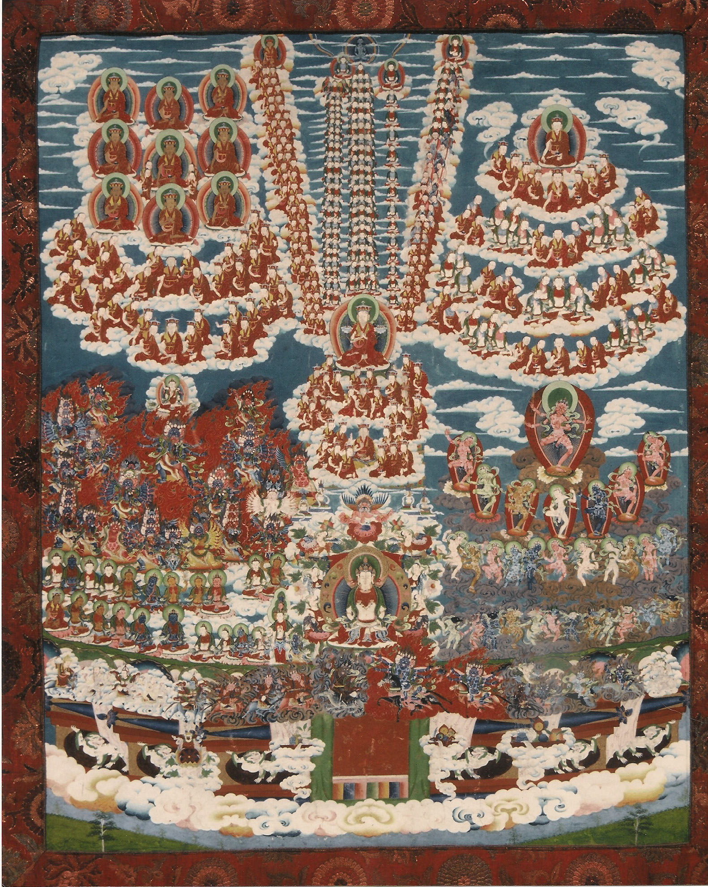

<title>Merit Field Lineage Tree</title>
<style>
:root{
  --bg:#f6f2ea; --panel:#fffdf8; --ink:#2a2420; --muted:#6f655c; --line:#ded5c6; --accent:#8a3b1e; --chip:#efe8da; --shadow:0 1px 3px rgba(0,0,0,.12);
}
@media (prefers-color-scheme:dark){
  :root:not([data-theme="light"]){--bg:#17120f; --panel:#201a16; --ink:#efe6d8; --muted:#a39685; --line:#3a3029; --accent:#e0a070; --chip:#2b231d; --shadow:0 1px 3px rgba(0,0,0,.5); color-scheme:dark;}
}
:root[data-theme="dark"]{--bg:#17120f; --panel:#201a16; --ink:#efe6d8; --muted:#a39685; --line:#3a3029; --accent:#e0a070; --chip:#2b231d; --shadow:0 1px 3px rgba(0,0,0,.5); color-scheme:dark;}
*{box-sizing:border-box}
html,body{height:100%;margin:0}
body{background:var(--bg);color:var(--ink);font:15px/1.5 system-ui,-apple-system,"Segoe UI",Roboto,sans-serif;display:flex;flex-direction:column}
header{display:flex;align-items:center;gap:12px;padding:10px 16px;border-bottom:1px solid var(--line);background:var(--panel)}
header h1{font-size:17px;margin:0;font-weight:650;letter-spacing:.2px}
header .sub{color:var(--muted);font-size:13px}
header .sp{flex:1}
button,.btn{font:inherit;color:var(--ink);background:var(--chip);border:1px solid var(--line);border-radius:6px;padding:5px 10px;cursor:pointer}
button:hover{border-color:var(--accent)}
button[aria-pressed="true"]{background:var(--accent);color:#fff;border-color:var(--accent)}
main{flex:1;min-height:0;display:grid;grid-template-columns:minmax(0,1fr) 400px}
#stage{position:relative;overflow:hidden;background:#0f0c0a;touch-action:none;cursor:grab;min-height:0}
#stage.dragging{cursor:grabbing}
#world{position:absolute;left:0;top:0;width:1580px;height:1976px;transform-origin:0 0;will-change:transform}
#world img.base{position:absolute;inset:0;width:100%;height:100%;display:block;user-select:none;-webkit-user-drag:none}
#world img.region{position:absolute;inset:0;width:100%;height:100%;opacity:0;transition:opacity .2s;pointer-events:none;mix-blend-mode:normal}
#world img.region.on{opacity:.62}
#world img.region.hover{opacity:.35}
#dots{position:absolute;inset:0;width:100%;height:100%;overflow:visible}
.dot{cursor:pointer;stroke:#fff;paint-order:stroke}
.dot.approx{opacity:.85}
.dot.region{stroke-dasharray:3 2}
.dot.sel{stroke:#000}
.ring{fill:none;stroke:#fff;stroke-width:2}
#tip{position:absolute;pointer-events:none;background:rgba(20,16,12,.92);color:#fff;font-size:13px;padding:4px 8px;border-radius:5px;max-width:260px;display:none;z-index:5}
#zoom{position:absolute;right:10px;bottom:10px;display:flex;flex-direction:column;gap:6px;z-index:4}
#zoom button{width:34px;height:34px;padding:0;font-size:18px;background:rgba(32,26,22,.85);color:#fff;border-color:#555}
#hint{position:absolute;left:10px;bottom:10px;background:rgba(20,16,12,.8);color:#e8dccb;font-size:12.5px;padding:5px 9px;border-radius:5px;z-index:4;max-width:70%}
#side{background:var(--panel);border-left:1px solid var(--line);overflow:auto;min-height:0;padding:12px 16px 40px}
#q{width:100%;padding:7px 10px;border:1px solid var(--line);border-radius:6px;background:var(--bg);color:var(--ink);font:inherit}
.chips{display:flex;flex-wrap:wrap;gap:6px;margin:10px 0}
.chip{display:inline-flex;align-items:center;gap:6px;border:1px solid var(--line);background:var(--chip);border-radius:999px;padding:3px 10px;font-size:13px;cursor:pointer;color:var(--ink)}
.chip i{width:10px;height:10px;border-radius:50%;display:inline-block}
.chip[aria-pressed="true"]{background:var(--ink);color:var(--panel);border-color:var(--ink)}
h2{font-size:16px;margin:12px 0 4px}
h3{font-size:13px;margin:14px 0 4px;color:var(--muted);font-weight:600;text-transform:none;letter-spacing:.2px}
.blurb{color:var(--muted);font-size:13.5px;margin:2px 0 8px}
.list{display:flex;flex-direction:column}
.item{display:flex;gap:8px;text-align:left;border:0;background:transparent;padding:3px 6px;border-radius:5px;cursor:pointer;width:100%;color:var(--ink)}
.item:hover,.item.sel{background:var(--chip)}
.item.sel{outline:1px solid var(--accent)}
.item .n{color:var(--muted);min-width:34px;text-align:right;font-variant-numeric:tabular-nums}
.item .nm{flex:1}
.item .sc{font-size:12px;color:var(--muted)}
.detail{border:1px solid var(--line);border-radius:8px;padding:12px;margin:10px 0;background:var(--bg)}
.detail h2{margin:0 0 2px;font-size:19px}
.detail .meta{color:var(--muted);font-size:13px;margin-bottom:8px}
.detail p{margin:6px 0;white-space:pre-wrap}
.detail figure{margin:10px 0 0}
.detail figure img{max-width:100%;border-radius:6px;border:1px solid var(--line);display:block}
.detail figcaption{font-size:12.5px;color:var(--muted);margin-top:4px}
.badge{display:inline-block;font-size:12px;border-radius:4px;padding:1px 7px;border:1px solid var(--line);background:var(--chip);color:var(--muted)}
.row{display:flex;gap:6px;flex-wrap:wrap;margin-top:8px}
.also a{color:var(--accent);cursor:pointer;text-decoration:underline}
.diag{margin:6px 0}
.diag img{max-width:100%;border:1px solid var(--line);border-radius:6px;background:#fff;cursor:zoom-in}
dialog{border:1px solid var(--line);border-radius:10px;background:var(--panel);color:var(--ink);max-width:640px;padding:18px 20px}
dialog::backdrop{background:rgba(0,0,0,.5)}
dialog h2{margin-top:0}
dialog p,dialog li{font-size:14px}
.big dialog,dialog.big{max-width:min(92vw,900px)}
dialog.big img{max-width:100%;max-height:80vh;display:block;margin:auto}
@media (max-width:900px){
  main{grid-template-columns:1fr;grid-template-rows:58vh minmax(0,1fr)}
  #side{border-left:0;border-top:1px solid var(--line)}
  header .sub{display:none}
}
</style>

<header>
  <h1>The Merit Field of the Menri Tradition</h1><span class="sub">Tsok Zhing: click a region or a figure</span>
  <span class="sp"></span>
  <button id="btnAdjust" aria-pressed="false" title="Drag the dots to correct their positions">Adjust positions</button>
  <button id="btnAbout">About</button>
</header>
<main>
  <section id="stage" aria-label="Thangka of the Merit Field">
    <div id="world">
      
      <div id="regions"></div>
      <svg id="dots" viewBox="0 0 1580 1976"></svg>
    </div>
    <div id="tip"></div>
    <div id="hint">Choose a lineage on the right, or click a coloured region of the painting.</div>
    <div id="zoom"><button id="zin" aria-label="Zoom in">+</button><button id="zout" aria-label="Zoom out">−</button><button id="zfit" aria-label="Fit" style="font-size:12px">fit</button></div>
  </section>
  <aside id="side">
    <input id="q" type="search" placeholder="Search names and descriptions…" aria-label="Search">
    <div class="chips" id="chips"></div>
    <div id="detail"></div>
    <div id="panel"></div>
  </aside>
</main>

<dialog id="about">
  <h2>About this page</h2>
  <p>The painting is the Merit Field (Tsok Zhing) of the Menri tradition. The names and descriptions come from the ten “Field of Accumulation” posts by Raven Cypress Wood on the Nine Ways site (ravencypresswood.com). Each lineage has its own numbering in those posts; the numbers are only an organising scheme, so this page uses them for order and, through the author’s outline diagrams, for locating each lineage on the painting.</p>
  <p><b>How reliable is each position?</b> A dot marked <i>on one figure</i> sits on a single figure located from the diagram (khandro, yidams, the Gathering of Buddhas, the large central figures). Dots marked <i>approximate</i> are spread along a column or crescent in list order; the exact painted figure has not been identified, so they locate the person only roughly. A dashed dot marks a whole group of figures.</p>
  <p><b>Correcting positions.</b> Turn on “Adjust positions” and drag any dot. Changes are kept in this browser; “Export positions” shows them as JSON to copy and merge into the data.</p>
  <p>The text and images belong to their author (“All Rights Reserved” on the source site). This is a private working copy; permission to republish has not been confirmed.</p>
  <form method="dialog"><button>Close</button></form>
</dialog>
<dialog id="exportdlg"><h2>Your position changes</h2><p>Copy this JSON; it maps each figure to its corrected x, y on the painting (pixels of the 1580 × 1976 image).</p><textarea id="exporttext" rows="10" style="width:100%;font:12px ui-monospace,monospace;background:var(--bg);color:var(--ink);border:1px solid var(--line);border-radius:6px" readonly></textarea><div class="row"><button id="copyexport">Copy</button><form method="dialog"><button>Close</button></form></div></dialog>
<dialog id="zoomimg" class="big"><form method="dialog" style="margin-top:8px"><button>Close</button></form></dialog>

<script>
const DATA = {"sections":[{"id":"abbots","title":"Root lama and the abbots of Menri","short":"Root lama & abbots of Menri","color":"#d69e2e","blurb":"Figure 1 is the root lama Shenlha Ökar; figures 2–34 are the abbots of Menri Monastery, each listed with the year he became abbot (master numbering 1–34).","source":"https://ravencypresswood.com/2014/12/06/the-field-of-accumulation-abbots-of-menri-monastery/","date":"2014-12-06","diagram":"images/01-abbots-of-menri-monastery/02_merit-field-outline-guide-1-34.jpg","region":"images/regions/abbots.png","entries":[{"id":"abbots:1","n":1,"name":"Shenlha Ökar","desc":"The glorious teacher who has blessings and who has the nature of all of the collective Victorious Ones, the all-good essence of the kind root lama, Shenlha Ökar. He has the 25 mudra of the Perfected Enjoyment Body. He wears the 13 peaceful ornaments and has the 9 ways of purity. He has the 32 major marks and the 80 minor marks. He has the 40 items of nobility and he radiates forth a million rays of light.","group":"Root lama","x":800.0,"y":1300.0,"prec":"exact","also":["zhangzhung:2","dzogchen:1"]},{"id":"abbots:2","n":2,"name":"Nyammé Sherap Gyaltsen","desc":"The Second Buddha. He united the three transmissions.","group":"Abbots of Menri Monastery","x":792.0,"y":718.0,"prec":"exact","also":["zhangzhung:70","dzogchen:28","ah:15","monastic:51"]},{"id":"abbots:3","n":3,"name":"Rinchen Gyaltsen","desc":"Regent of the Second Buddha, Nyammé Sherap Gyaltsen. Abbot from. Became abbot in 1415.","group":"Abbots of Menri Monastery","x":755.5,"y":852.6,"prec":"exact","also":["zhangzhung:71","ah:16"]},{"id":"abbots:4","n":4,"name":"Namkha Yeshé","desc":"The great abbot. Abbot from. Became abbot in 1446.","group":"Abbots of Menri Monastery","x":825.9,"y":856.2,"prec":"exact","also":["zhangzhung:72","ah:17"]},{"id":"abbots:5","n":5,"name":"Künzang Gyalten","desc":"Became abbot of Menri Monastery in 1464.","group":"Abbots of Menri Monastery","x":591.3,"y":789.0,"prec":"approx"},{"id":"abbots:6","n":6,"name":"Tenzin Rinchen Gyaltsen","desc":"Became abbot of Menri Monastery in 1485.","group":"Abbots of Menri Monastery","x":605.0,"y":814.7,"prec":"approx"},{"id":"abbots:7","n":7,"name":"Tsultrim Gyaltsen","desc":"Became abbot of Menri Monastery in 1511.","group":"Abbots of Menri Monastery","x":618.9,"y":839.2,"prec":"approx","also":["zhangzhung:74"]},{"id":"abbots:8","n":8,"name":"Sonam Yeshé","desc":"Became abbot of Menri Monastery in 1532.","group":"Abbots of Menri Monastery","x":633.0,"y":862.3,"prec":"approx","also":["zhangzhung:75"]},{"id":"abbots:9","n":9,"name":"Sonam Yundrung","desc":"Became abbot of Menri Monastery in 1575.","group":"Abbots of Menri Monastery","x":647.2,"y":884.0,"prec":"approx"},{"id":"abbots:10","n":10,"name":"Shétsu Drungmu","desc":"Became abbot of Menri Monastery in 1610.","group":"Abbots of Menri Monastery","x":661.5,"y":904.1,"prec":"approx","also":["zhangzhung:77"]},{"id":"abbots:11","n":11,"name":"Shérab Özer","desc":"Became abbot of Menri Monastery in 1647.","group":"Abbots of Menri Monastery","x":675.8,"y":922.3,"prec":"approx","also":["zhangzhung:78","zhangzhung:81"]},{"id":"abbots:12","n":12,"name":"Yungdrung Gyaltsen","desc":"Became abbot of Menri Monastery in 1662.","group":"Abbots of Menri Monastery","x":690.1,"y":938.8,"prec":"approx","also":["zhangzhung:79"]},{"id":"abbots:13","n":13,"name":"Shérab Lodro","desc":"Became abbot of Menri Monastery in 1677.","group":"Abbots of Menri Monastery","x":704.5,"y":953.3,"prec":"approx","also":["zhangzhung:80","zhangzhung:99"]},{"id":"abbots:14","n":14,"name":"Shérab Özer","desc":"Became abbot of Menri Monastery in 1686.","group":"Abbots of Menri Monastery","x":718.7,"y":965.8,"prec":"approx","also":["zhangzhung:78","zhangzhung:81"]},{"id":"abbots:15","n":15,"name":"Tsukpü Özer","desc":"Became abbot of Menri Monastery in 1697.","group":"Abbots of Menri Monastery","x":733.0,"y":976.2,"prec":"approx","also":["zhangzhung:82"]},{"id":"abbots:16","n":16,"name":"Yungdrung Tsultrim","desc":"Became abbot of Menri Monastery in 1706.","group":"Abbots of Menri Monastery","x":747.2,"y":984.5,"prec":"approx","also":["zhangzhung:83","monastic:16"]},{"id":"abbots:17","n":17,"name":"Rinchen Özer","desc":"Became abbot of Menri Monastery in 1722.","group":"Abbots of Menri Monastery","x":761.4,"y":990.6,"prec":"approx","also":["zhangzhung:84"]},{"id":"abbots:18","n":18,"name":"Rinchen Lhundrup","desc":"Became abbot of Menri Monastery in 1735.","group":"Abbots of Menri Monastery","x":775.5,"y":994.6,"prec":"approx","also":["zhangzhung:85"]},{"id":"abbots:19","n":19,"name":"Sherap Tenzin","desc":"Became abbot of Menri Monastery in 1760.","group":"Abbots of Menri Monastery","x":789.6,"y":996.5,"prec":"approx","also":["zhangzhung:86"]},{"id":"abbots:20","n":20,"name":"Shérap Wangyal","desc":"Became abbot of Menri Monastery in 1776.","group":"Abbots of Menri Monastery","x":803.6,"y":996.1,"prec":"approx","also":["zhangzhung:87"]},{"id":"abbots:21","n":21,"name":"Yungdrung Wangyal","desc":"Became abbot of Menri Monastery in 1789.","group":"Abbots of Menri Monastery","x":817.6,"y":993.6,"prec":"approx","also":["zhangzhung:88"]},{"id":"abbots:22","n":22,"name":"Püntsok Namgyal","desc":"Became abbot of Menri Monastery in 1805.","group":"Abbots of Menri Monastery","x":831.6,"y":988.9,"prec":"approx","also":["zhangzhung:89"]},{"id":"abbots:23","n":23,"name":"Sonam Lodro","desc":"Also known as Sherap Gong Gyal. Became abbot in 1810.","group":"Abbots of Menri Monastery","x":845.5,"y":982.1,"prec":"approx","also":["tantra:46"]},{"id":"abbots:24","n":24,"name":"Nangton Dawa Gyaltsen","desc":"Also known as Sonam Gyaltsen. In 1834, he founded the renowned Yungdrung Ling Monastery.","group":"Abbots of Menri Monastery","x":792.0,"y":958.9,"prec":"exact"},{"id":"abbots:25","n":25,"name":"Nyima Tenzin","desc":"Became abbot of Menri Monastery in 1836. He was also one of the main teachers of Yungdrung Ling Monastery.","group":"Abbots of Menri Monastery","x":859.4,"y":973.2,"prec":"approx","also":["zhangzhung:91"]},{"id":"abbots:26","n":26,"name":"Sonam Püntsok","desc":"","group":"Abbots of Menri Monastery","x":873.3,"y":962.2,"prec":"approx"},{"id":"abbots:27","n":27,"name":"Shérap Yungdrung","desc":"","group":"Abbots of Menri Monastery","x":887.3,"y":949.2,"prec":"approx","also":["zhangzhung:93"]},{"id":"abbots:28","n":28,"name":"Sangye Tenzin","desc":"","group":"Abbots of Menri Monastery","x":901.3,"y":934.3,"prec":"approx"},{"id":"abbots:29","n":29,"name":"Tenzin Tsultrim","desc":"","group":"Abbots of Menri Monastery","x":915.4,"y":917.5,"prec":"approx","also":["zhangzhung:95"]},{"id":"abbots:30","n":30,"name":"Püntsok Lodro","desc":"","group":"Abbots of Menri Monastery","x":929.6,"y":898.9,"prec":"approx"},{"id":"abbots:31","n":31,"name":"Gyalwa Lodro","desc":"","group":"Abbots of Menri Monastery","x":944.0,"y":878.7,"prec":"approx","also":["zhangzhung:96"]},{"id":"abbots:32","n":32,"name":"Tenpa Lodro","desc":"","group":"Abbots of Menri Monastery","x":958.5,"y":857.1,"prec":"approx","also":["zhangzhung:97"]},{"id":"abbots:33","n":33,"name":"Nyima Wangyal","desc":"","group":"Abbots of Menri Monastery","x":973.3,"y":834.1,"prec":"approx"},{"id":"abbots:34","n":34,"name":"Sherap Lodro","desc":"He is the first abbot of Menri Monastery in Dolanji, India. 1968. Upon ordination as the 33rd throne-holder of Menri Monastery, he was given the name Lungtok Tenpé Nyima.","group":"Abbots of Menri Monastery","x":988.4,"y":810.0,"prec":"approx","img":"images/01-abbots-of-menri-monastery/03_hh-lotus-hat-smile-1-70.jpg","imgcap":"The 33rd Holder of the Golden Throne of Menri Monastery, His Holiness Lungtok Tenpe Nyima Rinpoche","also":["zhangzhung:80","zhangzhung:99"]}]},{"id":"zhangzhung","title":"Aural Transmission of Zhang Zhung","short":"Aural transmission of Zhang Zhung","color":"#4682e6","blurb":"The Zhang Zhung Nyen Gyü: the continuous, unbroken Aural Lineage of Dzogchen teachings. The post numbers it 1–101 (the list below has 102 entries).","source":"https://ravencypresswood.com/2015/01/18/the-field-of-accumulation-the-aural-transmission-of-zhang-zhung/","date":"2015-01-18","diagram":"images/02-the-aural-transmission-of-zhang-zhung/02_outline-guide-for-tsok-zhing-zzng.jpg","region":"images/regions/zhangzhung.png","entries":[{"id":"zhangzhung:1","n":1,"name":"Küntu Zangpo","desc":"The source of the lineage, the teacher Küntu Zangpo. This is the Bönku. He is naked and without ornamentation.","group":"Nine Divine Beings of the Mind-to-Mind Transmission","x":805.0,"y":108.0,"prec":"exact"},{"id":"zhangzhung:2","n":2,"name":"Shenlha Ökar","desc":"The pure, white light deity of compassion. This is the Dzok ku. His compassion is all-pervasive and he is the embodiment of exalted, positive qualities.","group":"Nine Divine Beings of the Mind-to-Mind Transmission","x":807.4,"y":146.0,"prec":"approx","also":["abbots:1","dzogchen:1"]},{"id":"zhangzhung:3","n":3,"name":"Gyalwa Shenrap","desc":"The divine being that descended to the human realm in order to guide sentient beings. This is the Tulku and he became known as the Lord Tönpa Shenrap Miwoché.","group":"Nine Divine Beings of the Mind-to-Mind Transmission","x":807.7,"y":151.1,"prec":"approx"},{"id":"zhangzhung:4","n":4,"name":"Tsemé Öden","desc":"The divine being that emanated into a god realm in order to guide bodhisattvas.","group":"Nine Divine Beings of the Mind-to-Mind Transmission","x":808.0,"y":156.2,"prec":"approx"},{"id":"zhangzhung:5","n":5,"name":"Trulshen Nangden","desc":"The divine being that emanated into a god realm from the mind of Küntu Zangpo.","group":"Nine Divine Beings of the Mind-to-Mind Transmission","x":808.3,"y":161.4,"prec":"approx","also":["dzogchen:9","tantra:1"]},{"id":"zhangzhung:6","n":6,"name":"Barnang Khujuk","desc":"The divine being that emanated into a god realm from the speech of Küntu Zangpo","group":"Nine Divine Beings of the Mind-to-Mind Transmission","x":808.7,"y":166.5,"prec":"approx"},{"id":"zhangzhung:7","n":7,"name":"Zangza Ringtsun","desc":"A divine emanation of the Great Mother Sherap Chamma and the divine mother of Chimé Tsukpü. Trulshen nangden descended upon her right shoulder in the form of a turquoise cuckoo and caused a subtle, internal heat. One year later, she gave birth to Chimé Tsukpü. Her body color is golden and she holds a golden vase in her right hand and a golden mala in her left hand.","group":"Nine Divine Beings of the Mind-to-Mind Transmission","x":809.0,"y":171.7,"prec":"approx","also":["tantra:2"]},{"id":"zhangzhung:8","n":8,"name":"Chimé Tsukpü","desc":"He is turquoise in color. Nine days after his birth, his mother Zangza Ringtsun found him suspended in space and radiating light. He taught both tantra and Dzogchen.","group":"Nine Divine Beings of the Mind-to-Mind Transmission","x":809.3,"y":176.8,"prec":"approx","also":["dzogchen:3","tantra:3"]},{"id":"zhangzhung:9","n":9,"name":"Sangwa Düpa","desc":"He received the transmission through rikpa and was the first to use speech as well as awareness to transmit the teachings. He was born a prince of Tazik and began the transmission among human beings. Because he was the first to use speech to transmit the teachings, he is also known as The Teacher of the Aural Transmission Lineage.","group":"Nine Divine Beings of the Mind-to-Mind Transmission","x":809.6,"y":181.9,"prec":"approx","also":["dzogchen:10","tantra:4"]},{"id":"zhangzhung:10","n":10,"name":"Lhabön Yongsu Dakpa","desc":"He received the transmission from Sangwa Düpa and spread the teachings in the god realm.","group":"The Five Beyond-All Masters","x":809.9,"y":187.1,"prec":"approx"},{"id":"zhangzhung:11","n":11,"name":"Lübön Banam","desc":"He received the transmission from Sangwa Düpa and spread the teachings in the lü (Sanskrit. naga) realm.","group":"The Five Beyond-All Masters","x":810.0,"y":192.2,"prec":"approx"},{"id":"zhangzhung:12","n":12,"name":"Mibön Tridé Zambu","desc":"He received the transmission from Sangwa Düpa and spread the teachings in the human realm.","group":"The Five Beyond-All Masters","x":810.0,"y":197.4,"prec":"approx"},{"id":"zhangzhung:13","n":13,"name":"Banam Kyolpo","desc":"","group":"The Five Beyond-All Masters","x":810.0,"y":202.5,"prec":"approx"},{"id":"zhangzhung:14","n":14,"name":"Trisho Gyalwa","desc":"He was the son of Banam Kyolpo.","group":"The Five Beyond-All Masters","x":810.0,"y":207.6,"prec":"approx"},{"id":"zhangzhung:15","n":15,"name":"Rasang Bönpo Samdrup","desc":"","group":"The Six Masters of the Six Meanings of Dzogchen","x":810.0,"y":212.8,"prec":"approx"},{"id":"zhangzhung:16","n":16,"name":"Darma Sherap","desc":"","group":"The Six Masters of the Six Meanings of Dzogchen","x":810.0,"y":217.9,"prec":"approx"},{"id":"zhangzhung:17","n":17,"name":"Darma Bodé","desc":"","group":"The Six Masters of the Six Meanings of Dzogchen","x":810.0,"y":223.1,"prec":"approx"},{"id":"zhangzhung:18","n":18,"name":"Zhang Zhung Bönpo Tripén","desc":"","group":"The Six Masters of the Six Meanings of Dzogchen","x":810.0,"y":228.2,"prec":"approx"},{"id":"zhangzhung:19","n":19,"name":"Muyé Lhagyung","desc":"","group":"The Six Masters of the Six Meanings of Dzogchen","x":810.0,"y":233.3,"prec":"approx"},{"id":"zhangzhung:20","n":20,"name":"Mashen Lézang","desc":"","group":"The Six Masters of the Six Meanings of Dzogchen","x":810.0,"y":238.5,"prec":"approx"},{"id":"zhangzhung:21","n":21,"name":"Gyershen Taklha","desc":"","group":"The Nine Masters of Experience Within","x":810.0,"y":243.6,"prec":"approx"},{"id":"zhangzhung:22","n":22,"name":"Rasang Bönpo Yungdrung Se","desc":"","group":"The Nine Masters of Experience Within","x":810.0,"y":248.8,"prec":"approx"},{"id":"zhangzhung:23","n":23,"name":"Séchen Yungdrung Pén","desc":"","group":"The Nine Masters of Experience Within","x":810.0,"y":253.9,"prec":"approx"},{"id":"zhangzhung:24","n":24,"name":"Gébar Döndrup","desc":"","group":"The Nine Masters of Experience Within","x":810.0,"y":259.1,"prec":"approx"},{"id":"zhangzhung:25","n":25,"name":"Gyerpung Gépén","desc":"","group":"The Nine Masters of Experience Within","x":810.0,"y":264.2,"prec":"approx"},{"id":"zhangzhung:26","n":26,"name":"Dése Gégyal","desc":"","group":"The Nine Masters of Experience Within","x":810.0,"y":269.3,"prec":"approx"},{"id":"zhangzhung:27","n":27,"name":"Zhang Zhung Namgyal","desc":"","group":"The Nine Masters of Experience Within","x":810.0,"y":274.5,"prec":"approx"},{"id":"zhangzhung:28","n":28,"name":"Muyé Lhagyung Karpo","desc":"","group":"The Nine Masters of Experience Within","x":810.0,"y":279.6,"prec":"approx"},{"id":"zhangzhung:29","n":29,"name":"Shen Horti Chenpo","desc":"","group":"The Nine Masters of Experience Within","x":810.0,"y":284.8,"prec":"approx"},{"id":"zhangzhung:30","n":30,"name":"Shen Dönkün Druppa","desc":"","group":"The Four Ürgyen Masters","x":810.0,"y":289.9,"prec":"approx"},{"id":"zhangzhung:31","n":31,"name":"Rasang Bönpo Péngyal","desc":"","group":"The Four Ürgyen Masters","x":810.0,"y":295.0,"prec":"approx"},{"id":"zhangzhung:32","n":32,"name":"Gurip Sega","desc":"","group":"The Four Ürgyen Masters","x":810.0,"y":300.2,"prec":"approx"},{"id":"zhangzhung:33","n":33,"name":"Dawa Gyaltsen","desc":"","group":"The Four Ürgyen Masters","x":810.0,"y":305.3,"prec":"approx"},{"id":"zhangzhung:34","n":34,"name":"Tapihritsa","desc":"He was born into a nomadic family in the country of Zhang Zhung. He practiced at a place near Mt. Tise known as Sengé Tap. He practiced for nine years without interrupting it with ordinary, human speech. He achieved the rainbow body of light. After this, Tapihritsa manifested as a young boy and began working as a shepherd for a wealthy man in the area where Nangzher Lopo was practicing. Upon meeting, Nangzher Lopo asked the boy a series of questions and became annoyed at his answers. Challenging him to debate in front of the Zhang Zhung king, the boy laughed and began speaking about the true nature of mind. Realizing that this was an emanation and not an ordinary boy, Nangzher Lopo fainted. Regaining consciousness, he saw that the boy had transformed and was showing a clear and luminous body surrounded by a rainbow and suspended in space.","group":"Tapihritsa and Nangzher Lopo","x":810.0,"y":310.5,"prec":"approx","img":"images/02-the-aural-transmission-of-zhang-zhung/03_zzng-masters-prior-to-8th-cent.jpg","imgcap":"Lineage Masters of the Aural Transmission of Zhang Zhung prior to the 8th Century"},{"id":"zhangzhung:35","n":35,"name":"Gyerpung Nangzher Lopo","desc":"He extensively practiced the cycles of Zhang Zhung Meri and Gekho. In doing so, he acquired great magical power. He was the priest for the Zhang Zhung king and was well-known throughout the kingdom. Because of his devotion, he met and received teachings from Tapihritsa 3 times. He lived for 573 years.","group":"Tapihritsa and Nangzher Lopo","x":810.0,"y":315.6,"prec":"approx","img":"images/02-the-aural-transmission-of-zhang-zhung/03_zzng-masters-prior-to-8th-cent.jpg","imgcap":"Lineage Masters of the Aural Transmission of Zhang Zhung prior to the 8th Century"},{"id":"zhangzhung:36","n":36,"name":"Gyalzik Sechung","desc":"He first received these teachings when he was 72 years old. He lived for 317 years and attained the rainbow body of light.","group":"The Six Yogis of Zhang Zhung (before the 8th century)","x":810.0,"y":320.7,"prec":"approx","img":"images/02-the-aural-transmission-of-zhang-zhung/03_zzng-masters-prior-to-8th-cent.jpg","imgcap":"Lineage Masters of the Aural Transmission of Zhang Zhung prior to the 8th Century"},{"id":"zhangzhung:37","n":37,"name":"Mu Shen Tsogé","desc":"At the age of 3, Nangzher Lopo identified him as a qualified student and he received the teachings at the age of 19. He lived for 173 years and attained the rainbow body of light.","group":"The Six Yogis of Zhang Zhung (before the 8th century)","x":810.0,"y":325.9,"prec":"approx","img":"images/02-the-aural-transmission-of-zhang-zhung/03_zzng-masters-prior-to-8th-cent.jpg","imgcap":"Lineage Masters of the Aural Transmission of Zhang Zhung prior to the 8th Century"},{"id":"zhangzhung:38","n":38,"name":"Mu Gyershen Tsotang","desc":"He lived for 113 years and attained the rainbow body of light.","group":"The Six Yogis of Zhang Zhung (before the 8th century)","x":810.0,"y":331.0,"prec":"approx","img":"images/02-the-aural-transmission-of-zhang-zhung/03_zzng-masters-prior-to-8th-cent.jpg","imgcap":"Lineage Masters of the Aural Transmission of Zhang Zhung prior to the 8th Century"},{"id":"zhangzhung:39","n":39,"name":"Mu Shotram Chenpo","desc":"He lived for 117 years and attained the rainbow body.","group":"The Six Yogis of Zhang Zhung (before the 8th century)","x":810.0,"y":336.2,"prec":"approx","img":"images/02-the-aural-transmission-of-zhang-zhung/03_zzng-masters-prior-to-8th-cent.jpg","imgcap":"Lineage Masters of the Aural Transmission of Zhang Zhung prior to the 8th Century"},{"id":"zhangzhung:40","n":40,"name":"Mu Gyalwa Lodro","desc":"He was attendant to Mu Shotram Chenpo for nine years before he received teachings. He lived for 270 years and attained the rainbow body of light.","group":"The Six Yogis of Zhang Zhung (before the 8th century)","x":810.0,"y":341.3,"prec":"approx","img":"images/02-the-aural-transmission-of-zhang-zhung/03_zzng-masters-prior-to-8th-cent.jpg","imgcap":"Lineage Masters of the Aural Transmission of Zhang Zhung prior to the 8th Century"},{"id":"zhangzhung:41","n":41,"name":"Pongyal Tsenpo","desc":"Also known as Ponchen Tsenpo, He purified all the defilements of his physical body and therefore it was not necessary for him to eat food for nourishment. He lived for 1,600 years and his body showed no signs of aging. He then transformed himself into a turquoise cuckoo and flew off towards the southwest in order to subdue demons.","group":"The Six Yogis of Zhang Zhung (before the 8th century)","x":810.0,"y":346.4,"prec":"approx","img":"images/02-the-aural-transmission-of-zhang-zhung/03_zzng-masters-prior-to-8th-cent.jpg","imgcap":"Lineage Masters of the Aural Transmission of Zhang Zhung prior to the 8th Century"},{"id":"zhangzhung:42","n":42,"name":"Gugé Loden","desc":"He received the teachings from Pöngyal Tsenpo in an area near Mount Tisé. As a youth, he worked as a goatherd and had often dreamt of a blue cuckoo speaking to him. One day, he watched as a cuckoo descended from the sky near him. Going closer, instead of a bird, he found a yogi in a blue robe. This was Pöngyal Tsenpo.","group":"Upper system: the Six Realized Sages","x":810.0,"y":351.6,"prec":"approx"},{"id":"zhangzhung:43","n":43,"name":"Pureng Kunga","desc":"He practiced in the area of Mount Tisé. By following his lama’s guidance on Dzogchen, he attained realization in one month.","group":"Upper system: the Six Realized Sages","x":810.0,"y":356.7,"prec":"approx"},{"id":"zhangzhung:44","n":44,"name":"Naljor Sechok","desc":"He had the power to prolong his life span and displayed many miracles.","group":"Upper system: the Six Realized Sages","x":810.0,"y":361.9,"prec":"approx"},{"id":"zhangzhung:45","n":45,"name":"Kyungji Mutur","desc":"He was a wandering yogi without any particular place of practice.","group":"Upper system: the Six Realized Sages","x":810.0,"y":367.0,"prec":"approx"},{"id":"zhangzhung:46","n":46,"name":"Dewa Ringmo","desc":"","group":"Upper system: the Six Realized Sages","x":810.0,"y":372.1,"prec":"approx"},{"id":"zhangzhung:47","n":47,"name":"Tokmé Zhikpo","desc":"He lived most of his life in a cave. He gave the full transmission to Yangtön Sherap Gyaltsen. This same lama also received the full transmission of the Lower system of transmission. In this way, he reunited the two transmissions.","group":"Upper system: the Six Realized Sages","x":810.0,"y":377.3,"prec":"approx"},{"id":"zhangzhung:48","n":48,"name":"Lhundrup Mutur","desc":"","group":"Lower system of transmission","x":810.0,"y":382.4,"prec":"approx"},{"id":"zhangzhung:49","n":49,"name":"Shengyal Lhatse","desc":"He lived for 113 years.","group":"Lower system of transmission","x":810.0,"y":387.6,"prec":"approx"},{"id":"zhangzhung:50","n":50,"name":"Lhagom Karpo","desc":"He lived for 97 years.","group":"Lower system of transmission","x":810.0,"y":392.7,"prec":"approx"},{"id":"zhangzhung:51","n":51,"name":"Ngodrup Gyaltsen","desc":"He was the son of Lhagom Karpo. He asked his father for teachings but his father refused and told him that he had performed a divination that indicated that his son was not a good candidate. Ngodrup then abandoned his wife and child and went to study with a Buddhist. Soon after this, his father reconsidered his decision and agreed to teach him. He lived for 73 years.","group":"Lower system of transmission","x":810.0,"y":397.8,"prec":"approx"},{"id":"zhangzhung:52","n":52,"name":"Orgom Kündul","desc":"Few Bönpo followers sought teachings from him but many Buddhist practitioners sought him out. He lived for 80 years.","group":"Lower system of transmission","x":810.0,"y":403.0,"prec":"approx"},{"id":"zhangzhung:53","n":53,"name":"Yangtön Sherap Gyaltsen","desc":"He was born into the prestigious Yangtön lineage of Dolpo, Nepal. He lived and taught during the 11th century. He received the full transmissions of both the Upper and the Lower Systems of Transmission and therefore united the transmissions. Out of compassion, he wrote down some of the teachings as well as commentaries. According to prophecy, his life span was to be 75 years but due to writing down the secret teachings, he died at the age of 63.","group":"Yangtön Sherap Gyaltsen: the two systems reunite","x":810.1,"y":408.1,"prec":"approx"},{"id":"zhangzhung:54","n":54,"name":"Dampa Bumjé","desc":"He spread the Bön teachings in the areas of Dolpo, Mustang and Western Tibet. His father was Yangtön Sherap Gyaltsen. After his death, Dampa received teachings from his mother. Because of his extraordinary meditative experiences, he added his own teachings to those of his father in the Experiential Transmission.","group":"The Five Masters of the Mantra and the Mind (southern lineage)","x":810.1,"y":413.3,"prec":"approx"},{"id":"zhangzhung:55","n":55,"name":"Lu Drakpa Tashi Gyaltsen","desc":"He was also a son to Yangtön Sherap Gyaltsen. Unlike his brother, he was a wandering yogi. He lived for 85 years.","group":"The Five Masters of the Mantra and the Mind (southern lineage)","x":810.2,"y":418.4,"prec":"approx"},{"id":"zhangzhung:56","n":56,"name":"Tokden Wonpo Yeshe Gyaltsen","desc":"His mother was Yangtön Sherap Gyaltsen’s daughter. His father was a bandit and he joined him in his exploits. One day, he father was killed during a fight and he was badly wounded. Once he recovered, he began to seek revenge. After some time had passed, he became tired with fighting and went to his uncle, Dampa Bumjé, to learn to read so that he could read the scriptures. However, his progress was slow and he went to his other uncle, Lu Drakpa, and asked for teachings that didn’t require the ability to read. Having received the teachings of the Zhang Zhung Nyen Gyü, he practiced and attained realization.","group":"The Five Masters of the Mantra and the Mind (southern lineage)","x":810.2,"y":423.5,"prec":"approx"},{"id":"zhangzhung:57","n":57,"name":"Yangtön Gyaltsen Rinchen","desc":"From the age of 8 until 21, he practiced tantra. At the age of 21, he received the Dzogchen teachings. He founded the monastery of Samling in Dolpo, Nepal.","group":"The Five Masters of the Mantra and the Mind (southern lineage)","x":810.3,"y":428.7,"prec":"approx"},{"id":"zhangzhung:58","n":58,"name":"Chikchö Depa Sherap","desc":"He is also known as Tokden Depa Sherap. He practiced in the area of Mount Tisé among other places.","group":"The Five Masters of the Mantra and the Mind (southern lineage)","x":810.3,"y":433.8,"prec":"approx"},{"id":"zhangzhung:59","n":59,"name":"Druchen Gyalwa Yungdrung","desc":"1242–1290. He was one of four brothers and received monk’s vows from his older brother. He was once the abbot of Yeru Wensaka Monastery which was founded by his family. He organized the practices of the Zhang Zhung Nyen Gyü into a widely used practice manual commonly known as the Chak Tri. He wrote many prayers, ritual guides and commentaries.","group":"Southern lineage continues","x":810.4,"y":439.0,"prec":"approx","also":["ah:9"]},{"id":"zhangzhung:60","n":60,"name":"Ripa Sherap Lodro","desc":"He was from Dolpo and traveled a great deal throughout Tibet.","group":"Southern lineage continues","x":810.4,"y":444.1,"prec":"approx"},{"id":"zhangzhung:61","n":61,"name":"Yeshé Rinchen","desc":"","group":"Southern lineage continues","x":810.5,"y":449.2,"prec":"approx"},{"id":"zhangzhung:62","n":62,"name":"Rangdrol Lama Gyaltsen","desc":"He frequently debated Buddhist monks including Tsongkhapa.","group":"Southern lineage continues","x":810.5,"y":454.4,"prec":"approx"},{"id":"zhangzhung:63","n":63,"name":"A Tok Sherap Gyaltsen","desc":"He was the personal attendant to Dru Gyalwa Yungdrung. He showed many signs of realization and lived for 120 years.","group":"Southern lineage continues","x":810.6,"y":459.5,"prec":"approx"},{"id":"zhangzhung:64","n":64,"name":"Kartsa Sonam Lodro","desc":"","group":"Southern lineage continues","x":810.6,"y":464.7,"prec":"approx"},{"id":"zhangzhung:65","n":65,"name":"Patön Tengyal Zangpo","desc":"He showed many signs of realization and is said to have circumambulated Mount Tisé in the form of a vulture.","group":"From Patön Tengyal Zangpo: the lineages reunite","x":810.7,"y":469.8,"prec":"approx"},{"id":"zhangzhung:66","n":66,"name":"Tokden Shepal","desc":"","group":"From Patön Tengyal Zangpo: the lineages reunite","x":810.7,"y":474.9,"prec":"approx"},{"id":"zhangzhung:67","n":67,"name":"Namkha Özer","desc":"","group":"From Patön Tengyal Zangpo: the lineages reunite","x":810.8,"y":480.1,"prec":"approx","also":["tantra:44"]},{"id":"zhangzhung:68","n":68,"name":"Yungdrung Yeshé","desc":"","group":"From Patön Tengyal Zangpo: the lineages reunite","x":810.8,"y":485.2,"prec":"approx"},{"id":"zhangzhung:69","n":69,"name":"Rinchen Lodro","desc":"","group":"From Patön Tengyal Zangpo: the lineages reunite","x":810.9,"y":490.4,"prec":"approx","also":["ah:14"]},{"id":"zhangzhung:70","n":70,"name":"Nyamme Sherap Gyaltsen","desc":"1356–1415. He founded Tashi Menri Monastery in Tibet.","group":"From Patön Tengyal Zangpo: the lineages reunite","x":810.9,"y":495.5,"prec":"approx","also":["abbots:2","dzogchen:28","ah:15","monastic:51"]},{"id":"zhangzhung:71","n":71,"name":"Rinchen Gyaltsen","desc":"","group":"From Patön Tengyal Zangpo: the lineages reunite","x":810.9,"y":500.6,"prec":"approx","also":["abbots:3","ah:16"]},{"id":"zhangzhung:72","n":72,"name":"Namkha Yeshé","desc":"","group":"From Patön Tengyal Zangpo: the lineages reunite","x":811.0,"y":505.8,"prec":"approx","also":["abbots:4","ah:17"]},{"id":"zhangzhung:73","n":73,"name":"Kunzang Gyaltsen","desc":"","group":"From Patön Tengyal Zangpo: the lineages reunite","x":811.0,"y":510.9,"prec":"approx","also":["ah:18"]},{"id":"zhangzhung:74","n":74,"name":"Tsultrim Gyaltsen","desc":"","group":"From Patön Tengyal Zangpo: the lineages reunite","x":811.1,"y":516.1,"prec":"approx","also":["abbots:7"]},{"id":"zhangzhung:75","n":75,"name":"Sonam Yeshé","desc":"","group":"From Patön Tengyal Zangpo: the lineages reunite","x":811.1,"y":521.2,"prec":"approx","also":["abbots:8"]},{"id":"zhangzhung:76","n":76,"name":"Sonam Yungdrung","desc":"","group":"From Patön Tengyal Zangpo: the lineages reunite","x":811.2,"y":526.4,"prec":"approx"},{"id":"zhangzhung:77","n":77,"name":"Shetsu Drungmu","desc":"","group":"From Patön Tengyal Zangpo: the lineages reunite","x":811.2,"y":531.5,"prec":"approx","also":["abbots:10"]},{"id":"zhangzhung:78","n":78,"name":"Sherap Özer","desc":"","group":"From Patön Tengyal Zangpo: the lineages reunite","x":811.3,"y":536.6,"prec":"approx","also":["abbots:11","abbots:14"]},{"id":"zhangzhung:79","n":79,"name":"Yungdrung Gyaltsen","desc":"","group":"From Patön Tengyal Zangpo: the lineages reunite","x":811.3,"y":541.8,"prec":"approx","also":["abbots:12"]},{"id":"zhangzhung:80","n":80,"name":"Sherap Lodro","desc":"","group":"From Patön Tengyal Zangpo: the lineages reunite","x":811.4,"y":546.9,"prec":"approx","also":["abbots:13","abbots:34"]},{"id":"zhangzhung:81","n":81,"name":"Sherap Özer","desc":"","group":"From Patön Tengyal Zangpo: the lineages reunite","x":811.4,"y":552.1,"prec":"approx","also":["abbots:11","abbots:14"]},{"id":"zhangzhung:82","n":82,"name":"Tsukpü Özer","desc":"","group":"From Patön Tengyal Zangpo: the lineages reunite","x":811.5,"y":557.2,"prec":"approx","also":["abbots:15"]},{"id":"zhangzhung:83","n":83,"name":"Yungdrung Tsultrim","desc":"","group":"From Patön Tengyal Zangpo: the lineages reunite","x":811.5,"y":562.3,"prec":"approx","also":["abbots:16","monastic:16"]},{"id":"zhangzhung:84","n":84,"name":"Rinchen Özer","desc":"","group":"From Patön Tengyal Zangpo: the lineages reunite","x":811.6,"y":567.5,"prec":"approx","also":["abbots:17"]},{"id":"zhangzhung:85","n":85,"name":"Rinchen Lhundrup","desc":"","group":"From Patön Tengyal Zangpo: the lineages reunite","x":811.6,"y":572.6,"prec":"approx","also":["abbots:18"]},{"id":"zhangzhung:86","n":86,"name":"Sherap Tenzin","desc":"","group":"From Patön Tengyal Zangpo: the lineages reunite","x":811.7,"y":577.8,"prec":"approx","also":["abbots:19"]},{"id":"zhangzhung:87","n":87,"name":"Sherap Wangyal","desc":"","group":"From Patön Tengyal Zangpo: the lineages reunite","x":811.7,"y":582.9,"prec":"approx","also":["abbots:20"]},{"id":"zhangzhung:88","n":88,"name":"Yungdrung Wangyal","desc":"","group":"From Patön Tengyal Zangpo: the lineages reunite","x":811.8,"y":588.0,"prec":"approx","also":["abbots:21"]},{"id":"zhangzhung:89","n":89,"name":"Püntsok Namgyal","desc":"","group":"From Patön Tengyal Zangpo: the lineages reunite","x":811.8,"y":593.2,"prec":"approx","also":["abbots:22"]},{"id":"zhangzhung:90","n":90,"name":"Sherap Gonggyal","desc":"","group":"From Patön Tengyal Zangpo: the lineages reunite","x":811.9,"y":598.3,"prec":"approx"},{"id":"zhangzhung:91","n":91,"name":"Nyima Tenzin","desc":"","group":"From Patön Tengyal Zangpo: the lineages reunite","x":811.9,"y":603.5,"prec":"approx","also":["abbots:25"]},{"id":"zhangzhung:92","n":92,"name":"Choklé Namgyal","desc":"","group":"From Patön Tengyal Zangpo: the lineages reunite","x":812.0,"y":608.6,"prec":"approx"},{"id":"zhangzhung:93","n":93,"name":"Sherap Yungdrung","desc":"","group":"From Patön Tengyal Zangpo: the lineages reunite","x":812.0,"y":613.7,"prec":"approx","also":["abbots:27"]},{"id":"zhangzhung:94","n":94,"name":"Sanggye Tenzin","desc":"","group":"From Patön Tengyal Zangpo: the lineages reunite","x":812.0,"y":618.9,"prec":"approx"},{"id":"zhangzhung:95","n":95,"name":"Tenzin Tsultrim","desc":"","group":"From Patön Tengyal Zangpo: the lineages reunite","x":812.0,"y":624.0,"prec":"approx","also":["abbots:29"]},{"id":"zhangzhung:96","n":96,"name":"Gyalwa Lodro","desc":"","group":"From Patön Tengyal Zangpo: the lineages reunite","x":812.0,"y":629.2,"prec":"approx","also":["abbots:31"]},{"id":"zhangzhung:97","n":97,"name":"Tenpa Lodro","desc":"","group":"From Patön Tengyal Zangpo: the lineages reunite","x":812.0,"y":634.3,"prec":"approx","also":["abbots:32"]},{"id":"zhangzhung:98","n":98,"name":"Nyima Wanggyal","desc":"","group":"From Patön Tengyal Zangpo: the lineages reunite","x":812.0,"y":639.4,"prec":"approx"},{"id":"zhangzhung:99","n":99,"name":"Sherap Lodro","desc":"","group":"From Patön Tengyal Zangpo: the lineages reunite","x":812.0,"y":644.6,"prec":"approx","also":["abbots:13","abbots:34"]},{"id":"zhangzhung:100","n":100,"name":"Sanggye Tenzin Lopön Tenzin Namdak","desc":"","group":"From Patön Tengyal Zangpo: the lineages reunite","x":812.0,"y":649.7,"prec":"approx","img":"images/02-the-aural-transmission-of-zhang-zhung/04_ytnr-formal.jpg","imgcap":"Lord of Refuge, His Eminence Menri Yongdzin Lopön Tenzin Namdak Rinpoché"},{"id":"zhangzhung:101","n":101,"name":"Lungtok Tenpé Nyima","desc":"The 33rd holder of the golden throne of Menri Monastery","group":"From Patön Tengyal Zangpo: the lineages reunite","x":812.0,"y":654.9,"prec":"approx"},{"id":"zhangzhung:102","n":102,"name":"Lungtok Dawa Dargyal","desc":"The 34th holder of the golden throne of Menri Monastery","group":"From Patön Tengyal Zangpo: the lineages reunite","x":812.0,"y":660.0,"prec":"approx"}]},{"id":"dzogchen","title":"Three-fold Cycle of Dzogchen Proclamations","short":"Three cycles of Dzogchen proclamations","color":"#a05adc","blurb":"The Dzogchen Drakpa Korsum Gyü, numbered 1–28; it ends with Nyammé Sherap Gyaltsen (28) at the base of the columns.","source":"https://ravencypresswood.com/2015/04/04/the-field-of-accumulation-the-lineage-of-the-three-renowned-cycles-of-dzogchen/","date":"2015-04-04","diagram":"images/03-the-lineage-of-the-three-fold-cycle-of-dzogchen-proclamation/02_outline-guide-for-tsok-zhing-dzogchen-drakpa-korsum.jpg","region":"images/regions/dzogchen.png","entries":[{"id":"dzogchen:1","n":1,"name":"Shenlha Ökar","desc":"The source of the lineage, the White Light Deity, Shenlha Ökar. He appears in the form of dzok ku, the enlightened Body of the Perfected Qualities and wears the corresponding ornaments. His compassion is all-pervasive.","group":"Source and first transmission","x":765.0,"y":150.0,"prec":"exact","also":["abbots:1","zhangzhung:2"]},{"id":"dzogchen:2","n":2,"name":"The Five Victorious Families","desc":"Also known as the Five Buddha Families; they have gone beyond bliss.","group":"Source and first transmission","x":747.9,"y":202.3,"prec":"approx"},{"id":"dzogchen:3","n":3,"name":"Chimé Tsukphü","desc":"He was the previous existence of the enlightened Lord Tönpa Shenrab Miwoche immediately before descending from heaven to earth.","group":"Source and first transmission","x":747.7,"y":220.6,"prec":"approx","also":["zhangzhung:8","tantra:3"]},{"id":"dzogchen:4","n":4,"name":"Lhashen Yongsu Dakpa","desc":"He was the shen of the gods who received the teachings from Chimé Tsukphü.","group":"Source and first transmission","x":747.5,"y":238.9,"prec":"approx","also":["tantra:6"]},{"id":"dzogchen:5","n":5,"name":"Milu Samlek","desc":"He was the shen of the humans who received the teachings from Chime Tsukphü. He was born a prince in the ancient land of Tazik as his father, the king, was about to die. He was known for his intelligence even as a young man.","group":"Source and first transmission","x":747.3,"y":257.3,"prec":"approx","also":["tantra:7"]},{"id":"dzogchen:6","n":6,"name":"Lushen Yeshé Nyingpo","desc":"He is the shen of the lu, aka nagas, who received the teachings from Chime Tsukphü.","group":"The Changeless Sages","x":747.2,"y":275.6,"prec":"approx"},{"id":"dzogchen:7","n":7,"name":"Ödzer Pakmé","desc":"He was a master from Tazik.","group":"The Changeless Sages","x":747.0,"y":293.9,"prec":"approx"},{"id":"dzogchen:8","n":8,"name":"Münpo Künsal","desc":"","group":"The Changeless Sages","x":747.0,"y":312.2,"prec":"approx"},{"id":"dzogchen:9","n":9,"name":"Trulshen Nangden","desc":"","group":"The Changeless Sages","x":747.0,"y":330.5,"prec":"approx","also":["zhangzhung:5","tantra:1"]},{"id":"dzogchen:10","n":10,"name":"Sangwa Düpa","desc":"He was a chief disciple of Chimé Tsukphü. He was born a prince of Tazik.","group":"The Changeless Sages","x":747.0,"y":348.8,"prec":"approx","also":["zhangzhung:9","tantra:4"]},{"id":"dzogchen:11","n":11,"name":"Tonggyung Tüchen","desc":"","group":"The Scholarly Translators","x":747.0,"y":367.1,"prec":"approx","img":"images/03-the-lineage-of-the-three-fold-cycle-of-dzogchen-proclamation/03_tonggyung-thuchen-with-border.jpg","imgcap":"Translator and great yogi, Lama Tonggyung Tuchen","also":["tantra:20"]},{"id":"dzogchen:12","n":12,"name":"Sé Bön Shari Uchen","desc":"","group":"The Scholarly Translators","x":747.0,"y":385.4,"prec":"approx"},{"id":"dzogchen:13","n":13,"name":"Chétsa Kharbu","desc":"","group":"The Scholarly Translators","x":747.0,"y":403.7,"prec":"approx","also":["tantra:23"]},{"id":"dzogchen:14","n":14,"name":"Nyachen Lishu Taring","desc":"A king and queen found a beautiful young girl in a forest. They named her Takza Liwer. Some time later, through the performance of ritual, she transformed herself into a man. However, she was still female when she wrote the root text for The Three-fold Cycle of Dzogchen Proclamations in the 8th century. As a male, he became heir to the kingdom and was called Nyachen Lishu Taring.","group":"The Scholarly Translators","x":746.8,"y":422.0,"prec":"approx"},{"id":"dzogchen:15","n":15,"name":"Dé Bön Gyimtsa Machung","desc":"","group":"Later masters","x":746.6,"y":440.3,"prec":"approx"},{"id":"dzogchen:16","n":16,"name":"Drupchen Chogye","desc":"","group":"Later masters","x":746.4,"y":458.6,"prec":"approx"},{"id":"dzogchen:17","n":17,"name":"Choza Bönmo","desc":"","group":"Later masters","x":746.3,"y":476.9,"prec":"approx","also":["khandro:10"]},{"id":"dzogchen:18","n":18,"name":"Zhotön Ngödrup Drakpa","desc":"He was an emanation of Lishu Taring and a tertön, or treasure revealer, who rediscovered hidden texts behind a statue of Vairochana in Lhodrak that were hidden by Lishu Taring during a time of persecution for the Yungdrung Bön.","group":"Later masters","x":746.1,"y":495.2,"prec":"approx"},{"id":"dzogchen:19","n":19,"name":"Gyaton Jodé","desc":"","group":"Later masters","x":745.9,"y":513.5,"prec":"approx"},{"id":"dzogchen:20","n":20,"name":"Zhikpo Nangseng","desc":"","group":"Later masters","x":745.8,"y":531.9,"prec":"approx"},{"id":"dzogchen:21","n":21,"name":"Kyotön Ngakpal","desc":"","group":"Later masters","x":745.6,"y":550.2,"prec":"approx"},{"id":"dzogchen:22","n":22,"name":"Yotön Lhunpal","desc":"","group":"Later masters","x":745.4,"y":568.5,"prec":"approx"},{"id":"dzogchen:23","n":23,"name":"Sengé Drukdra","desc":"","group":"Later masters","x":745.2,"y":586.8,"prec":"approx"},{"id":"dzogchen:24","n":24,"name":"Bönzhik Lodé","desc":"","group":"Later masters","x":745.1,"y":605.1,"prec":"approx"},{"id":"dzogchen:25","n":25,"name":"Tokden Yungrin","desc":"","group":"Later masters","x":745.0,"y":623.4,"prec":"approx"},{"id":"dzogchen:26","n":26,"name":"Khetsün Sherdrüp","desc":"","group":"Later masters","x":745.0,"y":641.7,"prec":"approx"},{"id":"dzogchen:27","n":27,"name":"Yonten Sengé","desc":"","group":"Later masters","x":745.0,"y":660.0,"prec":"approx"},{"id":"dzogchen:28","n":28,"name":"Nyammé Sherap Gyaltsen","desc":"The Second Victor and founder of Tashi Menri Monastery, 1356–1415.","group":"Later masters","x":792.0,"y":718.0,"prec":"exact","also":["abbots:2","zhangzhung:70","ah:15","monastic:51"]}]},{"id":"ah","title":"Profound Guidance through AH","short":"Profound guidance through AH","color":"#28aa96","blurb":"The AH Tri, one of three Dzogchen lineages of the Yungdrung Bön tradition. Figures 1–14 and 16–21 run down the column; 15 is Nyammé Sherap Gyaltsen at its base.","source":"https://ravencypresswood.com/2015/05/03/the-field-of-accumulation-the-lineage-of-the-profound-guidance-through-ah/","date":"2015-05-03","diagram":"images/04-the-lineage-of-the-profound-guidance-through-ah/02_outline-guide-for-tsok-zhing-ah-tri.jpg","region":"images/regions/ah.png","entries":[{"id":"ah:1","n":1,"name":"Me’u Gongdzö Ritropa","desc":"Founder of the lineage, Me’u Gongdzö Ritropa. He is often referred to simply as Dampa, “The Sage” or “The Saint”. He exhibited many signs of accomplishment such as flying through the sky and leaving his hand and foot prints in stone. Although his primary focus was upon his meditation, he also wrote a number of texts. In addition to material he collected from other sources, he added his own gong ter, or mind treasure, to this collection. He organized the practice of the A Tri into 80 meditation sessions.","group":"From Me’u Gongdzö Ritropa","x":865.0,"y":150.0,"prec":"exact","img":"images/04-the-lineage-of-the-profound-guidance-through-ah/03_meu-gongdzo-ritropa-color-sm.jpg","imgcap":"Founder of the AH Tri Lineage of Dzogchen teachings, The Saint, The Supreme Gongdzo Ritropa Rinpoche","also":["monastic:35"]},{"id":"ah:2","n":2,"name":"Gomchen Barwa","desc":"He was an unconventional person and became a great yogi. He was known for odd and somewhat dramatic displays. One day, Gongdzo Ritropa took Gomchen to a grassy area that was quite wet. The lama knew that Gomchen was known to have been quite athletic in his youth. So he told him to make a great leap. In doing so, Gomchen slipped and violently fell down. In that very instant, he achieved spiritual realization without interruption. Rather than taking ordination, he remained a laymen his entire life. He had many disciples and attained the rainbow body of light.","group":"From Me’u Gongdzö Ritropa","x":872.0,"y":200.0,"prec":"approx"},{"id":"ah:3","n":3,"name":"Kyunggom Joyung","desc":"","group":"From Me’u Gongdzö Ritropa","x":872.0,"y":238.3,"prec":"approx"},{"id":"ah:4","n":4,"name":"Dampa Tsulshé","desc":"","group":"From Me’u Gongdzö Ritropa","x":872.0,"y":276.6,"prec":"approx"},{"id":"ah:5","n":5,"name":"Drogön Yorpo Mepal","desc":"He composed a commentary for the Guidance through AH teachings.","group":"From Me’u Gongdzö Ritropa","x":872.2,"y":315.0,"prec":"approx"},{"id":"ah:6","n":6,"name":"Dutsi Gyaltsen","desc":"","group":"From Me’u Gongdzö Ritropa","x":872.6,"y":353.3,"prec":"approx","also":["monastic:39"]},{"id":"ah:7","n":7,"name":"A Zha Lodro Gyaltsen","desc":"1198–1263. He condensed the number of meditation sessions to 30.","group":"From Me’u Gongdzö Ritropa","x":872.9,"y":391.7,"prec":"approx"},{"id":"ah:8","n":8,"name":"Dru Dulwa Gyaltsen","desc":"","group":"From Me’u Gongdzö Ritropa","x":872.7,"y":430.0,"prec":"approx"},{"id":"ah:9","n":9,"name":"Druchen Gyalwa Yungdrung","desc":"1242–1290. A.D. He was born into the Dru family in the area of Yeru Wensaka in Central Tibet. He received his monk vows from his older brother, Dru Dulwa Rinpoche. He was once the abbot of Yeru Wensaka Monastery which was founded by his family. He further condensed the number of meditation sessions of the Guidance through AH to 15 and composed the fundamental practice text “AH Tri Practice in 15 Sessions”.","group":"From Me’u Gongdzö Ritropa","x":872.4,"y":468.3,"prec":"approx","also":["zhangzhung:59"]},{"id":"ah:10","n":10,"name":"Dru Namkha Odzer","desc":"He was the younger brother of Dru Gyalwa Yungdrung.","group":"From Me’u Gongdzö Ritropa","x":872.0,"y":506.7,"prec":"approx"},{"id":"ah:11","n":11,"name":"Dru Sonam Gyaltsen","desc":"1268–1321. He was the nephew of Dru Gyalwa Yungdrung.","group":"From Me’u Gongdzö Ritropa","x":871.3,"y":545.0,"prec":"approx"},{"id":"ah:12","n":12,"name":"Dru Sonam Lodro","desc":"1277–1341","group":"From Me’u Gongdzö Ritropa","x":870.5,"y":583.3,"prec":"approx"},{"id":"ah:13","n":13,"name":"Dru Namgyal Kara","desc":"","group":"From Me’u Gongdzö Ritropa","x":870.0,"y":621.7,"prec":"approx"},{"id":"ah:14","n":14,"name":"Rinchen Lodro","desc":"His mother was from the Dru family.","group":"From Me’u Gongdzö Ritropa","x":870.0,"y":660.0,"prec":"approx","also":["zhangzhung:69"]},{"id":"ah:15","n":15,"name":"Nyammé Sherap Gyaltsen","desc":"1356–1415. He is known as the Second Buddha and founded Tashi Menri Monastery in Tibet.","group":"The Menri lineage","x":792.0,"y":718.0,"prec":"exact","also":["abbots:2","zhangzhung:70","dzogchen:28","monastic:51"]},{"id":"ah:16","n":16,"name":"Rinchen Gyaltsen","desc":"He became abbot of Menri Monastery in 1415.","group":"The Menri lineage","x":881.0,"y":266.3,"prec":"approx","also":["abbots:3","zhangzhung:71"]},{"id":"ah:17","n":17,"name":"Namkha Yeshe","desc":"He became abbot of Menri Monastery in 1446.","group":"The Menri lineage","x":881.4,"y":337.7,"prec":"approx","also":["abbots:4","zhangzhung:72"]},{"id":"ah:18","n":18,"name":"Kunzang Gyaltsen","desc":"He became abbot of Menri Monastery in 1464.","group":"The Menri lineage","x":881.9,"y":409.1,"prec":"approx","also":["zhangzhung:73"]},{"id":"ah:19","n":19,"name":"Lodro Gyaltsen","desc":"","group":"The Menri lineage","x":881.2,"y":480.5,"prec":"approx"},{"id":"ah:20","n":20,"name":"Tenpa Özer","desc":"","group":"The Menri lineage","x":880.1,"y":551.9,"prec":"approx"},{"id":"ah:21","n":21,"name":"Nyima Özer","desc":"","group":"The Menri lineage","x":879.0,"y":623.3,"prec":"approx"}]},{"id":"monastic","title":"Lamas of Pure Discipline (Monastic Lineage)","short":"Lamas of pure discipline (monastic lineage)","color":"#dc4646","blurb":"The lineage of monastic discipline: masters who took monk’s vows. 1–50 run down the column; 51 is Nyammé Sherap Gyaltsen.","source":"https://ravencypresswood.com/2015/06/02/the-field-of-accumulation-the-lamas-of-pure-discipline-the-monastic-lineage/","date":"2015-06-02","diagram":"images/05-the-lamas-of-pure-discipline-the-monastic-lineage/02_outline-guide-for-tsok-zhing-lineage-of-monks.jpg","region":"images/regions/monastic.png","entries":[{"id":"monastic:1","n":1,"name":"Tritsuk Gyalwa","desc":"16,017 BC – 7,817 BC. This is the name that the enlightened Lord Tönpa Shenrap Miwoche received upon taking ordination as a monk at the age of 31. Although he was already a completely enlightened being, he showed the example of taking the path of renunciation.","group":"From Tritsuk Gyalwa to Me’u Gongdzö Ritropa","x":599.0,"y":96.0,"prec":"exact","img":"images/05-the-lamas-of-pure-discipline-the-monastic-lineage/03_tritsuk-gyalwa-clearer-and-smaller.jpg","imgcap":"Lord Tonpa Shenrap showing the path of renunciation as the monk Tritsuk Gyalwa"},{"id":"monastic:2","n":2,"name":"Tsukshen Gyalwa","desc":"","group":"From Tritsuk Gyalwa to Me’u Gongdzö Ritropa","x":604.5,"y":152.1,"prec":"approx"},{"id":"monastic:3","n":3,"name":"Drangsong Gyalwa","desc":"He was one of Tönpa Shenrap’s eight sons. His birth name was Tobu Bumsang.","group":"From Tritsuk Gyalwa to Me’u Gongdzö Ritropa","x":605.5,"y":162.7,"prec":"approx"},{"id":"monastic:4","n":4,"name":"Tsukse Mawo","desc":"","group":"From Tritsuk Gyalwa to Me’u Gongdzö Ritropa","x":606.6,"y":173.2,"prec":"approx"},{"id":"monastic:5","n":5,"name":"Tridé Gungdrak","desc":"","group":"From Tritsuk Gyalwa to Me’u Gongdzö Ritropa","x":607.6,"y":183.8,"prec":"approx"},{"id":"monastic:6","n":6,"name":"Mucho Demdruk","desc":"","group":"From Tritsuk Gyalwa to Me’u Gongdzö Ritropa","x":609.0,"y":194.4,"prec":"approx"},{"id":"monastic:7","n":7,"name":"Mutsa Trahé","desc":"He was from the ancient land of Tazik. He was one of The Six Translators who wrote down the words of Lord Tönpa Shenrap into their respective languages and brought them to their respective countries.","group":"From Tritsuk Gyalwa to Me’u Gongdzö Ritropa","x":610.7,"y":205.0,"prec":"approx"},{"id":"monastic:8","n":8,"name":"Tridé Öpo","desc":"","group":"From Tritsuk Gyalwa to Me’u Gongdzö Ritropa","x":612.4,"y":215.6,"prec":"approx"},{"id":"monastic:9","n":9,"name":"Lhang Lhang Tsukphü","desc":"","group":"From Tritsuk Gyalwa to Me’u Gongdzö Ritropa","x":614.1,"y":226.1,"prec":"approx"},{"id":"monastic:10","n":10,"name":"Dangwa Yi Ring","desc":"","group":"From Tritsuk Gyalwa to Me’u Gongdzö Ritropa","x":615.8,"y":236.7,"prec":"approx"},{"id":"monastic:11","n":11,"name":"Thukar Yeshé","desc":"","group":"From Tritsuk Gyalwa to Me’u Gongdzö Ritropa","x":617.5,"y":247.3,"prec":"approx"},{"id":"monastic:12","n":12,"name":"Gung Rum Yeshe","desc":"","group":"From Tritsuk Gyalwa to Me’u Gongdzö Ritropa","x":619.2,"y":257.9,"prec":"approx"},{"id":"monastic:13","n":13,"name":"Ölha Selbar","desc":"","group":"From Tritsuk Gyalwa to Me’u Gongdzö Ritropa","x":620.9,"y":268.5,"prec":"approx"},{"id":"monastic:14","n":14,"name":"Dzütrul Yeshé","desc":"","group":"From Tritsuk Gyalwa to Me’u Gongdzö Ritropa","x":622.6,"y":279.1,"prec":"approx"},{"id":"monastic:15","n":15,"name":"Yeshé Tsultrim","desc":"","group":"From Tritsuk Gyalwa to Me’u Gongdzö Ritropa","x":624.3,"y":289.6,"prec":"approx"},{"id":"monastic:16","n":16,"name":"Yungdrung Tsultrim","desc":"","group":"From Tritsuk Gyalwa to Me’u Gongdzö Ritropa","x":626.0,"y":300.2,"prec":"approx","also":["abbots:16","zhangzhung:83"]},{"id":"monastic:17","n":17,"name":"Tsukphü Tsultrim","desc":"","group":"From Tritsuk Gyalwa to Me’u Gongdzö Ritropa","x":627.7,"y":310.8,"prec":"approx"},{"id":"monastic:18","n":18,"name":"Gachu Gyalwa","desc":"","group":"From Tritsuk Gyalwa to Me’u Gongdzö Ritropa","x":629.4,"y":321.4,"prec":"approx"},{"id":"monastic:19","n":19,"name":"Yagong Gyalwa","desc":"","group":"From Tritsuk Gyalwa to Me’u Gongdzö Ritropa","x":631.1,"y":332.0,"prec":"approx"},{"id":"monastic:20","n":20,"name":"Détsun Rabsel","desc":"","group":"From Tritsuk Gyalwa to Me’u Gongdzö Ritropa","x":632.8,"y":342.5,"prec":"approx"},{"id":"monastic:21","n":21,"name":"Jotsün Yeshé","desc":"","group":"From Tritsuk Gyalwa to Me’u Gongdzö Ritropa","x":634.5,"y":353.1,"prec":"approx"},{"id":"monastic:22","n":22,"name":"Muzi Salzang","desc":"He was a manifestation of Mucho Demdruk. During a time of suppression, he retreated to a cave and went into a meditation of cessation, stopping all thoughts and sensations. Hundreds of years later, Tribar Tsultrim came upon him in the cave.","group":"From Tritsuk Gyalwa to Me’u Gongdzö Ritropa","x":636.2,"y":363.7,"prec":"approx"},{"id":"monastic:23","n":23,"name":"Tribar Tsultrim","desc":"He was the manifestation of Tsukshen Gyalwa. He was born a prince but due to external circumstances, he was banished to Mongolia and became a slave of a local ruler. One day, while looking after the ruler’s horses, he wandered into a cave that looked dark at the entrance but light on the inside. Once inside the cave, he saw a figure that resembled a monk but whose hair had grown down to the ground and become entangled. The karmic connection immediately ripened and he joyfully began prostrating and requesting that the monk awake from his meditation. Day after day, he returned to the cave. First, one of the monk’s eyebrows moved, then a portion of his face. On the third day, he yelled at the slave, “Are you a human or non-human obstacle?” The slave replied that he desired to become his disciple. The monk agreed and gave him full ordination. The monk in the cave was Muzi Selzang.","group":"From Tritsuk Gyalwa to Me’u Gongdzö Ritropa","x":637.9,"y":374.3,"prec":"approx"},{"id":"monastic:24","n":24,"name":"Gyalwa Tsukphü","desc":"He was the manifestation of Tobu Bumsang, son of Lord Tönpa Shenrap.","group":"From Tritsuk Gyalwa to Me’u Gongdzö Ritropa","x":639.6,"y":384.9,"prec":"approx"},{"id":"monastic:25","n":25,"name":"Tsukphü Tsultrim","desc":"He was the manifestation of Tsukse Mawo.","group":"From Tritsuk Gyalwa to Me’u Gongdzö Ritropa","x":641.3,"y":395.5,"prec":"approx"},{"id":"monastic:26","n":26,"name":"Lachen Mutur","desc":"He was born in 952 AD. He was also known by his monastic name, Sherap Tsultrim. He had many disciples, both Yungdrung Bön and Buddhist. He gave his disciples the four signs of monastic ordination which were, Upper and lower garments, a lotus hat and a meditation mat that were all blue. He said that if the articles could not be entirely blue, then they should have parallel seams of blue thread. He was a manifestation of Mutsa Trahé.","group":"From Tritsuk Gyalwa to Me’u Gongdzö Ritropa","x":643.0,"y":406.0,"prec":"approx"},{"id":"monastic:27","n":27,"name":"Nyö Tsün Rinchen Gyaltsen","desc":"He was the manifestation of Tridé Öpo.","group":"From Tritsuk Gyalwa to Me’u Gongdzö Ritropa","x":644.8,"y":416.6,"prec":"approx"},{"id":"monastic:28","n":28,"name":"Nyö Künga Tsultrim","desc":"He was the manifestation of Lhang Lhang Tsukpü.","group":"From Tritsuk Gyalwa to Me’u Gongdzö Ritropa","x":646.6,"y":427.2,"prec":"approx"},{"id":"monastic:29","n":29,"name":"Gar Rinchen Tsukpü","desc":"He was the manifestation of Dangwa Yi Ring","group":"From Tritsuk Gyalwa to Me’u Gongdzö Ritropa","x":648.4,"y":437.8,"prec":"approx"},{"id":"monastic:30","n":30,"name":"Trapü Tsultrim","desc":"He was the manifestation of Tuk Kar Yeshé.","group":"From Tritsuk Gyalwa to Me’u Gongdzö Ritropa","x":650.2,"y":448.4,"prec":"approx"},{"id":"monastic:31","n":31,"name":"Nyöla Drukpa Tsultrim Yeshé","desc":"He was the manifestation of Gang Rum Tsukpü.","group":"From Tritsuk Gyalwa to Me’u Gongdzö Ritropa","x":652.0,"y":458.9,"prec":"approx"},{"id":"monastic:32","n":32,"name":"Sheltsün Yungdrung","desc":"He was the manifestation of Ölha Salwar.","group":"From Tritsuk Gyalwa to Me’u Gongdzö Ritropa","x":653.8,"y":469.5,"prec":"approx"},{"id":"monastic:33","n":33,"name":"Gur Tsün Yungdrung Gyaltsen","desc":"He was the manifestation of Yeshé Tsultrim.","group":"From Tritsuk Gyalwa to Me’u Gongdzö Ritropa","x":655.6,"y":480.1,"prec":"approx"},{"id":"monastic:34","n":34,"name":"Khenlop Namnyi","desc":"","group":"From Tritsuk Gyalwa to Me’u Gongdzö Ritropa","x":657.4,"y":490.7,"prec":"approx"},{"id":"monastic:35","n":35,"name":"Me’u Gongdzö Ritropa","desc":"1038–1096. He was the manifestation of Sertok Chejam and founder of the AH Tri Lineage of Dzogchen teachings.","group":"From Tritsuk Gyalwa to Me’u Gongdzö Ritropa","x":659.2,"y":501.3,"prec":"approx","also":["ah:1"]},{"id":"monastic:36","n":36,"name":"Métön Sherab Ödzer","desc":"","group":"The four family lines to Nyammé Sherap Gyaltsen","x":660.9,"y":511.9,"prec":"approx"},{"id":"monastic:37","n":37,"name":"Shentön Namkha Gyaltsen","desc":"He was the manifestation of the great lama, Drenpa Namkha.","group":"The four family lines to Nyammé Sherap Gyaltsen","x":662.6,"y":522.4,"prec":"approx"},{"id":"monastic:38","n":38,"name":"Yorpo Métön Drakpa Pal","desc":"He was a manifestation of the great lama, Drenpa Namkha.","group":"The four family lines to Nyammé Sherap Gyaltsen","x":664.3,"y":533.0,"prec":"approx"},{"id":"monastic:39","n":39,"name":"Dütsi Gyaltsen","desc":"He was the manifestation of Lhatri of Zhang Zhung.","group":"The four family lines to Nyammé Sherap Gyaltsen","x":666.0,"y":543.6,"prec":"approx","also":["ah:6"]},{"id":"monastic:40","n":40,"name":"Darma Gyaltsen","desc":"He was the manifestation of Hripa Gyermé.","group":"The four family lines to Nyammé Sherap Gyaltsen","x":667.7,"y":554.2,"prec":"approx"},{"id":"monastic:41","n":41,"name":"Tsultrim Lama","desc":"","group":"The four family lines to Nyammé Sherap Gyaltsen","x":669.4,"y":564.8,"prec":"approx"},{"id":"monastic:42","n":42,"name":"Drogön Martön Gyallé","desc":"","group":"The four family lines to Nyammé Sherap Gyaltsen","x":671.1,"y":575.3,"prec":"approx"},{"id":"monastic:43","n":43,"name":"Bartang Zhangtön Sonam","desc":"","group":"The four family lines to Nyammé Sherap Gyaltsen","x":672.8,"y":585.9,"prec":"approx"},{"id":"monastic:44","n":44,"name":"Sumtön Lhabum","desc":"","group":"The four family lines to Nyammé Sherap Gyaltsen","x":674.5,"y":596.5,"prec":"approx"},{"id":"monastic:45","n":45,"name":"Shentön Drogön Lodro Gyaltsen","desc":"","group":"The four family lines to Nyammé Sherap Gyaltsen","x":676.2,"y":607.1,"prec":"approx"},{"id":"monastic:46","n":46,"name":"Shentön Yeshé Lodro","desc":"In 1173, he built the temple of Darding Sergo Tramo Tsukla Khang in Darding.","group":"The four family lines to Nyammé Sherap Gyaltsen","x":678.1,"y":617.7,"prec":"approx"},{"id":"monastic:47","n":47,"name":"Men Gongwa Dülwa Lodro","desc":"","group":"The four family lines to Nyammé Sherap Gyaltsen","x":680.0,"y":628.3,"prec":"approx"},{"id":"monastic:48","n":48,"name":"Men Gongwa Sherap Lodro","desc":"","group":"The four family lines to Nyammé Sherap Gyaltsen","x":682.0,"y":638.8,"prec":"approx"},{"id":"monastic:49","n":49,"name":"Gya Rongwa Yungdrung Yeshé","desc":"","group":"The four family lines to Nyammé Sherap Gyaltsen","x":684.0,"y":649.4,"prec":"approx"},{"id":"monastic:50","n":50,"name":"Drutön Tsultrim Yeshé","desc":"He was the Abbot who gave vows to Nyammé Sherap Gyaltsen.","group":"The four family lines to Nyammé Sherap Gyaltsen","x":686.0,"y":660.0,"prec":"approx"},{"id":"monastic:51","n":51,"name":"Nyammé Sherap Gyaltsen","desc":"1356–1415. He is known as the Second Buddha and was the founder and 1st abbot of Tashi Menri Monastery in Tibet.","group":"The four family lines to Nyammé Sherap Gyaltsen","x":792.0,"y":718.0,"prec":"exact","also":["abbots:2","zhangzhung:70","dzogchen:28","ah:15"]}]},{"id":"tantra","title":"Lamas of the Three Cycles of Secret Mantra","short":"Three cycles of secret mantra","color":"#e67828","blurb":"The lineage of tantra: masters who wore the clothes of yogis, tertöns (revealers of hidden treasure) or monks.","source":"https://ravencypresswood.com/2015/08/15/the-field-of-accumulation-lamas-of-the-renowned-three-cycles-of-secret-mantra/","date":"2015-08-15","diagram":"images/06-lamas-of-the-renowned-three-cycles-of-secret-mantra/02_outline-guide-for-tsok-zhing-tantra.jpg","region":"images/regions/tantra.png","entries":[{"id":"tantra:1","n":1,"name":"Trulshen Nangden","desc":"Trulshen Nangden was the incarnation of Lord Tönpa Shenrap before he manifested in Olmo Lungrik. Transforming himself into a blue cuckoo, he alighted upon the shoulder of the deity Zangza Ringtsun. This caused a subtle, internal heat. As a result, he was miraculously born to her as Chimé Tsukpü.","group":"Early masters","x":1020.0,"y":100.0,"prec":"exact","also":["zhangzhung:5","dzogchen:9"]},{"id":"tantra:2","n":2,"name":"Zangza Ringtsun","desc":"Zangza Ringtsun was an emanation of the enlightened wise, loving Mother, Sherap Chamma who received the teachings of the Secret Mother Tantra from the primordial Buddha.","group":"Early masters","x":1006.5,"y":154.2,"prec":"approx","also":["zhangzhung:7"]},{"id":"tantra:3","n":3,"name":"Chimé Tsukpü","desc":"Chimé Tsukpü was miraculously born to Zangza Ringtsun.","group":"Early masters","x":1003.6,"y":165.7,"prec":"approx","also":["zhangzhung:8","dzogchen:3"]},{"id":"tantra:4","n":4,"name":"Sangwa Düpa","desc":"Sangwa Düpa is cited in some texts as the previous incarnation of Buddha Shakyamuni.","group":"Early masters","x":1000.7,"y":177.2,"prec":"approx","also":["zhangzhung:9","dzogchen:10"]},{"id":"tantra:5","n":5,"name":"Takla Mebar","desc":"Takla Mebar was a prince of Tazik.","group":"Early masters","x":997.9,"y":188.7,"prec":"approx"},{"id":"tantra:6","n":6,"name":"Lhashen Yongsu Dakpa","desc":"Lhashen Yongsu Dakpa spread the teachings among the gods.","group":"Early masters","x":995.9,"y":200.2,"prec":"approx","also":["dzogchen:4"]},{"id":"tantra:7","n":7,"name":"Milu Samlek","desc":"Milu Samlek was known for his intelligence and wrote separate commentaries for each of the three cycles of the Mother Tantra: outer, inner, and secret. He spread the teachings in the human realm.","group":"Early masters","x":994.0,"y":211.7,"prec":"approx","also":["dzogchen:5"]},{"id":"tantra:8","n":8,"name":"Ludrup Yeshe Nyingpo","desc":"Ludrup Yeshe Nyingpo was born to parents who had been childless for a long time. After making offerings and praying to the lu, or naga, a child was born to them. He spead the teachings among the lu.","group":"Early masters","x":992.0,"y":223.2,"prec":"approx","img":"images/06-lamas-of-the-renowned-three-cycles-of-secret-mantra/03_ludrup-yeshe-nyingpo-cropped.jpg","imgcap":"Lama Ludrup Yeshe Nyingpo"},{"id":"tantra:9","n":9,"name":"Nangwa Dokchen","desc":"Nangwa Dokchen transmitted the teachings to the son of the first Tibetan king.","group":"Early masters","x":990.1,"y":234.6,"prec":"approx"},{"id":"tantra:10","n":10,"name":"Mutri Tsenpo","desc":"Mutri Tsenpo was the son of the first Tibetan king, Nyatri Tsenpo. He invited one hundred eight esteemed scholars of Zhang Zhung to Tibet. After him, these teachings were not taught for three generations due to political obstacles.","group":"Early masters","x":988.1,"y":246.1,"prec":"approx"},{"id":"tantra:11","n":11,"name":"Hara Chipar","desc":"Hara Chipar received the teachings from the four magical khandro of the elements of earth, fire, water and air in order to keep the teachings from further decline.","group":"Early masters","x":986.2,"y":257.6,"prec":"approx"},{"id":"tantra:12","n":12,"name":"Takwer Liwer","desc":"Takwer Liwer was a female practitioner and achieved supernatural powers. She could tame wild animals and also transform herself into anything that she wished. The spirits of earth and water obeyed her commands. After living for three hundred sixty years, she achieved the fruit of realization, the rainbow body of light.","group":"Early masters","x":984.2,"y":269.1,"prec":"approx"},{"id":"tantra:13","n":13,"name":"Anu Traktak","desc":"Anu Traktak practiced on Mount Tise (Kailash) and lived for two hundred fifty-five years.","group":"Early masters","x":982.3,"y":280.6,"prec":"approx"},{"id":"tantra:14","n":14,"name":"Sené Ga’u","desc":"Sené Ga’u was born in Zhang Zhung and had many teachers. It is said that he could cure leprosy simply by looking at the patient. He achieved the rainbow body of light.","group":"Early masters","x":980.3,"y":292.1,"prec":"approx"},{"id":"tantra:15","n":15,"name":"Tami Teké","desc":"Tami Teké lived for two hundred seventy-seven years and achieved supernatural powers.","group":"Early masters","x":978.2,"y":303.6,"prec":"approx"},{"id":"tantra:16","n":16,"name":"Shebu Rakhuk","desc":"Shebu Rakhuk lived for two hundred years and achieved supernatural powers.","group":"Early masters","x":976.0,"y":315.1,"prec":"approx"},{"id":"tantra:17","n":17,"name":"Zingwa Tüchen","desc":"Zingwa Tüchen was a Chinese practitioner and lived for two hundred sixty-one years.","group":"Early masters","x":973.8,"y":326.6,"prec":"approx"},{"id":"tantra:18","n":18,"name":"Pébön Toktsé","desc":"","group":"Early masters","x":971.7,"y":338.1,"prec":"approx"},{"id":"tantra:19","n":19,"name":"Pébön Toktrul","desc":"Pébön Toktrul lived for one hundred thirty-five years.","group":"Early masters","x":969.5,"y":349.6,"prec":"approx"},{"id":"tantra:20","n":20,"name":"Tonggyung Tüchen","desc":"","group":"The Four Great Scholars","x":967.3,"y":361.1,"prec":"approx","also":["dzogchen:11"]},{"id":"tantra:21","n":21,"name":"Shari Uchen","desc":"Shari Uchen was a previous manifestation of the modern day saint, Shardza Tashi Gyaltsen Rinpoche.","group":"The Four Great Scholars","x":965.2,"y":372.6,"prec":"approx"},{"id":"tantra:22","n":22,"name":"Gyimte Machung","desc":"","group":"The Four Great Scholars","x":963.0,"y":384.1,"prec":"approx"},{"id":"tantra:23","n":23,"name":"Chetsa Kharbu","desc":"","group":"The Four Great Scholars","x":960.8,"y":395.6,"prec":"approx","also":["dzogchen:13"]},{"id":"tantra:24","n":24,"name":"Hripa Gyermé","desc":"","group":"Tertöns and the Dru lineage","x":959.2,"y":407.1,"prec":"approx"},{"id":"tantra:25","n":25,"name":"Mutsa Gyermé","desc":"Mutsa Gyermé gave the text Zi Ji to the 14th century master, Loden Nyingpo in a vision.","group":"Tertöns and the Dru lineage","x":957.9,"y":418.5,"prec":"approx"},{"id":"tantra:26","n":26,"name":"Drenpa Namkha","desc":"Drenpa Namkha was born in 753 AD. In general, there are three Drenpa Namkha that are incarnations of the previous one. 1) Drenpa Namkha of Tazik 2)Drenpa Namkha of Zhang Zhung who was a prince and is commonly referred to as La Chen, the great lama. It was this Drenpa Namkha that married an Indian Brahman girl and had twin sons, Tsewang Rikdzin and Pema Tongdrol. 3) Drenpa Namkha of Tibet who saved many Yungdrung Bön texts from destruction during the persecution of Bön by the Tibetan kind Trisong Detsen. See previous post, “Practice of the Great Lama, Drenpa Namkha.”","group":"Tertöns and the Dru lineage","x":956.6,"y":430.0,"prec":"approx","img":"images/06-lamas-of-the-renowned-three-cycles-of-secret-mantra/04_zz-drenpa-namkha-maybe.jpg","imgcap":"Lama Drenpa Namkha","also":["yidams:8"]},{"id":"tantra:27","n":27,"name":"Shenchen Luga","desc":"Shenchen Luga (996–1035) was a manifestation of Tonggyung Tüchen and was a terton, or treasure discoverer, one who discovers texts and/or sacred objects that are hidden. He had many disciples who began religious centers in their respective home villages.","group":"Tertöns and the Dru lineage","x":955.3,"y":441.5,"prec":"approx"},{"id":"tantra:28","n":28,"name":"Germi Nyi Öd","desc":"Germi Nyi Öd was born in Zhang Zhung and was a terton. He lived for three hundred years.","group":"Tertöns and the Dru lineage","x":954.0,"y":453.0,"prec":"approx"},{"id":"tantra:29","n":29,"name":"Matön Sidzin","desc":"Matön Sidzin was a terton who discovered many texts including a ritual invocation of the protector Sipe Gyalmo.","group":"Tertöns and the Dru lineage","x":952.7,"y":464.5,"prec":"approx"},{"id":"tantra:30","n":30,"name":"Yiltön Khyungö Tsal","desc":"Yiltön Khyungö Tsal was born in 1198 and was a great terton who discovered many texts including the main ritual text for the protector and yidam Gekho,","group":"Tertöns and the Dru lineage","x":951.4,"y":476.0,"prec":"approx"},{"id":"tantra:31","n":31,"name":"Druchen Namkha Yungdrung","desc":"","group":"Tertöns and the Dru lineage","x":950.1,"y":487.5,"prec":"approx"},{"id":"tantra:32","n":32,"name":"Wangden Zhuye Lekpo","desc":"Wangden Zhuye Lekpo was one of Shenchen Luga’s main disciples and served him as an attendant. He founded the famous Ri Zhing Monastery.","group":"Tertöns and the Dru lineage","x":948.8,"y":499.0,"prec":"approx"},{"id":"tantra:33","n":33,"name":"Patön Palchok Zangpo","desc":"Patön Palchok Zangpo was one of the final disciples to meet Shenchen Luga.","group":"Tertöns and the Dru lineage","x":947.5,"y":510.5,"prec":"approx"},{"id":"tantra:34","n":34,"name":"Me’u Lhari Nyenpo","desc":"Me’u Lhari Nyenpo composed a summary of the long version of the Yungdrung Bön Prajnaparamita that was discovered as terma by Shenchen Luga.","group":"Tertöns and the Dru lineage","x":946.3,"y":522.0,"prec":"approx"},{"id":"tantra:35","n":35,"name":"Drusha Khyungi Gyaltsen","desc":"Drusha Khyungi Gyaltsen was the son of Druchen Namkha Yungdrung.","group":"Tertöns and the Dru lineage","x":945.1,"y":533.5,"prec":"approx"},{"id":"tantra:36","n":36,"name":"Drusha Jetsun","desc":"","group":"Tertöns and the Dru lineage","x":944.0,"y":545.0,"prec":"approx"},{"id":"tantra:37","n":37,"name":"Drutön Nyigyal","desc":"","group":"Tertöns and the Dru lineage","x":942.8,"y":556.5,"prec":"approx"},{"id":"tantra:38","n":38,"name":"Yorpo Mépal","desc":"1134–1168","group":"Tertöns and the Dru lineage","x":941.6,"y":568.0,"prec":"approx"},{"id":"tantra:39","n":39,"name":"Nyi Tsultrim Gyaltsen","desc":"","group":"Tertöns and the Dru lineage","x":940.4,"y":579.5,"prec":"approx"},{"id":"tantra:40","n":40,"name":"Drogön Dutsi Gyaltsen","desc":"","group":"Tertöns and the Dru lineage","x":939.2,"y":591.0,"prec":"approx"},{"id":"tantra:41","n":41,"name":"Drogön Lodro Gyaltsen","desc":"Drogön Lodro Gyaltsen (1198–1263) was also known as Azha Lodro Gyaltsen.","group":"Tertöns and the Dru lineage","x":938.0,"y":602.4,"prec":"approx"},{"id":"tantra:42","n":42,"name":"Dulwa Gyaltsen","desc":"","group":"Tertöns and the Dru lineage","x":936.7,"y":613.9,"prec":"approx"},{"id":"tantra:43","n":43,"name":"Drutön Gyalwa Yungdrung","desc":"","group":"Tertöns and the Dru lineage","x":935.0,"y":625.4,"prec":"approx"},{"id":"tantra:44","n":44,"name":"Namkha Özer","desc":"","group":"Tertöns and the Dru lineage","x":933.4,"y":636.9,"prec":"approx","also":["zhangzhung:67"]},{"id":"tantra:45","n":45,"name":"Sonam Gyaltsen","desc":"","group":"Tertöns and the Dru lineage","x":931.7,"y":648.4,"prec":"approx"},{"id":"tantra:46","n":46,"name":"Sonam Lodro","desc":"","group":"Tertöns and the Dru lineage","x":930.0,"y":659.9,"prec":"approx","also":["abbots:23"]},{"id":"tantra:47","n":47,"name":"Namkha Sonam","desc":"","group":"Tertöns and the Dru lineage","x":930.0,"y":671.4,"prec":"approx"},{"id":"tantra:48","n":48,"name":"Tsewang Gyaltsen","desc":"","group":"Tertöns and the Dru lineage","x":930.0,"y":682.9,"prec":"approx"},{"id":"tantra:49","n":49,"name":"Namkha Rinchen","desc":"","group":"Tertöns and the Dru lineage","x":930.0,"y":694.4,"prec":"approx"},{"id":"tantra:50","n":50,"name":"Namgyal Kara","desc":"","group":"Tertöns and the Dru lineage","x":930.0,"y":705.9,"prec":"approx"},{"id":"tantra:51","n":51,"name":"Khedrup Rinchen Lodro","desc":"","group":"Tertöns and the Dru lineage","x":930.0,"y":717.4,"prec":"approx"}]},{"id":"buddhas","title":"The Gathering of Buddhas","short":"Gathering of Buddhas","color":"#f0c828","blurb":"The gathering of all the Enlightened Beings (master numbers 235–249).","source":"https://ravencypresswood.com/2016/04/07/the-field-of-accumulation-the-gathering-of-buddhas/","date":"2016-04-07","diagram":"images/07-the-gathering-of-buddhas/02_outline-guide-for-tsok-zhing-235-249.jpg","region":"images/regions/buddhas.png","entries":[{"id":"buddhas:235","n":235,"name":"Gyalwa Shenrap Miwo Künlé Nampar Gyalwa","desc":"The Completely Victorious in Every Way, Shenrap Miwo. 16,017 BC – 7,817 BC. He is the Enlightened Being of the present time and founder of the Yungdrung Bön religious tradition. He appeared in the human realm when the human life-span was generally 100 years long. There are three versions of his life history: short, medium and long. The short version is within a text commonly referred to as the Do Dü. It is a terma, or rediscovered text, and has twenty-four chapters within one volume. The medium length version is within a text commonly referred to as the Zer Mik. It is also a terma and has eighteen chapters in two volumes. The long version is within a text commonly referred to as the Zi Ji. It is part of a group of orally transmitted texts and has sixty-one chapters in twelve volumes.","group":"Shenrap Miwo and his disciples","x":373.0,"y":347.0,"prec":"exact"},{"id":"buddhas:236","n":236,"name":"Yungdrung Tsukshen Gyalwa","desc":"","group":"Shenrap Miwo and his disciples","x":315.7,"y":395.9,"prec":"exact"},{"id":"buddhas:237","n":237,"name":"Sebu Malo","desc":"One of the main disciples of Shenrap Miwo.","group":"Shenrap Miwo and his disciples","x":317.2,"y":425.6,"prec":"exact"},{"id":"buddhas:238","n":238,"name":"Sebu Yulo","desc":"One of the main disciples of Shenrap Miwo.","group":"Shenrap Miwo and his disciples","x":434.6,"y":396.2,"prec":"exact"},{"id":"buddhas:239","n":239,"name":"Tobu Bumsang","desc":"He was the eldest son of Tönpa Shenrap Miwo. He led a group of disciples who primarily practiced the dzogchen teachings.","group":"Shenrap Miwo and his disciples","x":438.5,"y":423.9,"prec":"exact"},{"id":"buddhas:240","n":240,"name":"Nangwa Rangjung Tukjéchen","desc":"This Enlightened Being appeared in the world when the human life-span was generally 100,000 years long.","group":"Enlightened Beings of past eons","x":253.0,"y":213.0,"prec":"exact"},{"id":"buddhas:241","n":241,"name":"Gewa Khorwa Kündren","desc":"This Enlightened Being appeared in the world when the human life-span was generally 80,000 years long.","group":"Enlightened Beings of past eons","x":372.9,"y":208.7,"prec":"exact"},{"id":"buddhas:242","n":242,"name":"Künshé Nyonmong Duksek","desc":"This Enlightened Being appeared in the world when the human life-span was generally 60,000 years long.","group":"Enlightened Beings of past eons","x":493.0,"y":207.0,"prec":"exact"},{"id":"buddhas:243","n":243,"name":"Lékpa Tsemé Tukjéchen","desc":"This Enlightened Being appeared in the world when the human life-span was generally 40,000 years long.","group":"Enlightened Beings of past eons","x":252.3,"y":333.6,"prec":"exact"},{"id":"buddhas:244","n":244,"name":"Nyompa Tamche Khyenzik","desc":"This Enlightened Being appeared in the world when the human life-span was generally 20,000 years long.","group":"Enlightened Beings of past eons","x":483.4,"y":342.3,"prec":"exact"},{"id":"buddhas:245","n":245,"name":"Jampa Trigyal Khukpa","desc":"This Enlightened Being appeared in the world when the human life-span was generally 10,000 years long.","group":"Enlightened Beings of past eons","x":253.0,"y":460.0,"prec":"exact"},{"id":"buddhas:246","n":246,"name":"Dakpa Togyal Yékhyen","desc":"This Enlightened Being appeared in the world when the human life-span was generally 1,000 years long. He was the eldest brother of Tönpa Shenrap Miwo in the celestial realm.","group":"Enlightened Beings of past eons","x":379.9,"y":458.6,"prec":"exact"},{"id":"buddhas:247","n":247,"name":"Jamden Rangma Médron","desc":"This Enlightened Being is prophesized to be the Buddha of the Future and will appear in this world when the human life-span has declined to be only 10 years long. He was the younger brother of Tönpa Shenrap Miwo in the celestial realm. He is depicted upon a throne held aloft by elephants and seated upon cushions of a sun, moon, and lotus. His right hand is held in a mudra of contemplation at the center of his heart and his left hand is held in the mudra of equipoise. His body is the color of clear crystal and upon his head is a crown of precious jewels.","group":"The Buddha of the future","x":493.0,"y":460.0,"prec":"exact","img":"images/07-the-gathering-of-buddhas/03_jampa-rangma-medron-buddha-of-the-future-w-border.jpg","imgcap":"Jamden Rangma Medron, the Buddha prophesized to appear in the future"},{"id":"buddhas:248","n":248,"name":"The 1002 Enlightened Beings of the Fortunate Eon","desc":"The thousand and two Buddhas of this fortunate eon.","group":"All Enlightened Beings","x":363.5,"y":562.5,"prec":"region"},{"id":"buddhas:249","n":249,"name":"All Enlightened Beings of the Ten Directions","desc":"All of the Enlightened Beings found throughout the ten directions.","group":"All Enlightened Beings","x":352.5,"y":662.8,"prec":"region"}]},{"id":"sempa","title":"The Yungdrung Sempa","short":"Yungdrung Sempa","color":"#3cbe5a","blurb":"Changeless and ceaseless warriors of the mind (bodhisattvas), in five groups.","source":"https://ravencypresswood.com/2016/09/04/the-field-of-accumulation-the-yungdrung-sempa/","date":"2016-09-04","diagram":"images/08-the-yungdrung-sempa/02_outline-guide-for-tsok-zhing-yungdrung-sempa.jpg","region":"images/regions/sempa.png","entries":[{"id":"sempa:1","n":1,"name":"Dung Tsop Mucho Démdruk","desc":"He is the Speech manifestation of the Enlightened Lord Tönpa Shenrap. In the Wood Dragon year of 6016 B.C., he descended from Ölmo Lungrik to the earth in order to benefit sentient beings. This was 1,801 years after Lord Tönpa Shenrap showed the appearance of passing into parinirvana. During this time, many scholars appeared. In the Water Rabbit year of 5717 B.C., he went to the realm of the demi-gods in order to give teachings.","group":"Yungdrung Sempa","x":1240.0,"y":296.0,"prec":"exact"},{"id":"sempa:2","n":2,"name":"Yungdrung Sempa of the Ten Stages of the Path of Meditation","desc":"","group":"Yungdrung Sempa","x":1233.6,"y":367.5,"prec":"region"},{"id":"sempa:3","n":3,"name":"Yungdrung Sempa of the Path of Seeing","desc":"","group":"Yungdrung Sempa","x":1258.6,"y":516.2,"prec":"region"},{"id":"sempa:4","n":4,"name":"Yungdrung Sempa of the Path of Preparation","desc":"","group":"Yungdrung Sempa","x":1267.1,"y":597.9,"prec":"region"},{"id":"sempa:5","n":5,"name":"Yungdrung Sempa of the Path of Accumulation","desc":"","group":"Yungdrung Sempa","x":1269.8,"y":701.9,"prec":"region"}]},{"id":"khandro","title":"The Ocean of Khandro","short":"Ocean of Khandro","color":"#e650aa","blurb":"The Ocean of Khandro (sky-goers, dakinis), figures 1–25: wisdom, action and animal-headed khandro.","source":"https://ravencypresswood.com/2016/11/13/the-field-of-accumulation-the-ocean-of-khandro/","date":"2016-11-13","diagram":"images/09-the-ocean-of-khandro/02_outline-guide-for-tsok-zhing-ocean-of-khandros.jpg","region":"images/regions/khandro.png","entries":[{"id":"khandro:1","n":1,"name":"Kalpa Zangmo","desc":"She has one face and four arms","group":"Wisdom Khandro","x":1238.2,"y":971.3,"prec":"exact","img":"images/09-the-ocean-of-khandro/03_kalpa-zangmo.jpg","imgcap":"Khandro Kalpo Zangmo"},{"id":"khandro:2","n":2,"name":"Miyo Tenma","desc":"","group":"Wisdom Khandro","x":1088.8,"y":1019.3,"prec":"exact"},{"id":"khandro:3","n":3,"name":"Dekma Kündrol","desc":"","group":"Wisdom Khandro","x":1130.2,"y":1087.0,"prec":"exact"},{"id":"khandro:4","n":4,"name":"Kyema Ötso","desc":"Khandro of the Mother Tantra","group":"Wisdom Khandro","x":1184.0,"y":1130.2,"prec":"exact"},{"id":"khandro:5","n":5,"name":"Namkha Déden","desc":"","group":"Wisdom Khandro","x":1243.0,"y":1152.4,"prec":"exact"},{"id":"khandro:6","n":6,"name":"Dakpa Kündü","desc":"","group":"Wisdom Khandro","x":1304.0,"y":1127.9,"prec":"exact"},{"id":"khandro:7","n":7,"name":"Salwa Dröbéb","desc":"","group":"Wisdom Khandro","x":1356.1,"y":1084.1,"prec":"exact"},{"id":"khandro:8","n":8,"name":"Tukjé Kündrol","desc":"Khandro of Tummo and Tsa Lung","group":"Wisdom Khandro","x":1394.1,"y":1017.4,"prec":"exact"},{"id":"khandro:9a","n":"9a","name":"Ürgyen Khandro","desc":"Khandro from Ürgyen","group":"Action Khandro","x":1500.5,"y":1095.3,"prec":"exact"},{"id":"khandro:9b","n":"9b","name":"Ürgyen Khandro","desc":"Khandro from Ürgyen","group":"Action Khandro","x":1463.1,"y":1158.5,"prec":"exact"},{"id":"khandro:9c","n":"9c","name":"Ürgyen Khandro","desc":"Khandro from Ürgyen","group":"Action Khandro","x":1420.1,"y":1214.1,"prec":"exact"},{"id":"khandro:9d","n":"9d","name":"Ürgyen Khandro","desc":"Khandro from Ürgyen","group":"Action Khandro","x":1363.0,"y":1253.0,"prec":"exact"},{"id":"khandro:10","n":10,"name":"Choza Bönmo","desc":"Khandro of the female lineage of the Yétri Tasel Dzogchen","group":"Action Khandro","x":1303.4,"y":1270.5,"prec":"exact","also":["dzogchen:17"]},{"id":"khandro:11","n":11,"name":"Öden Barma","desc":"Consort of Yidam Drenpa Namkha","group":"Action Khandro","x":1245.0,"y":1280.5,"prec":"exact"},{"id":"khandro:12a","n":"12a","name":"Gyagar Khandro","desc":"Khandro from India","group":"Action Khandro","x":1186.5,"y":1274.5,"prec":"exact"},{"id":"khandro:12b","n":"12b","name":"Gyagar Khandro","desc":"Khandro from India","group":"Action Khandro","x":1127.2,"y":1261.3,"prec":"exact"},{"id":"khandro:12c","n":"12c","name":"Gyagar Khandro","desc":"Khandro from India","group":"Action Khandro","x":1068.4,"y":1225.1,"prec":"exact"},{"id":"khandro:12d","n":"12d","name":"Gyagar Khandro","desc":"Khandro from India","group":"Action Khandro","x":1021.1,"y":1167.9,"prec":"exact"},{"id":"khandro:13","n":13,"name":"Drushé Khandro","desc":"Khandro from Drusha","group":"Action Khandro","x":978.2,"y":1102.7,"prec":"exact"},{"id":"khandro:14","n":14,"name":"Durjé Ü","desc":"Heron-headed Khandro","group":"Animal-headed Khandro","x":1500.2,"y":1290.6,"prec":"exact"},{"id":"khandro:15","n":15,"name":"Pharwé Ü","desc":"Coyote-headed Khandro","group":"Animal-headed Khandro","x":1488.4,"y":1394.8,"prec":"exact"},{"id":"khandro:16","n":16,"name":"Chusin Ü","desc":"Crocodile-headed Khandro","group":"Animal-headed Khandro","x":1423.1,"y":1452.0,"prec":"exact"},{"id":"khandro:17","n":17,"name":"Duktrul Ü","desc":"Poisonous Snake-headed Khandro","group":"Animal-headed Khandro","x":1403.5,"y":1353.9,"prec":"exact"},{"id":"khandro:18","n":18,"name":"Chè Chang Ü","desc":"Jackal-headed Khandro","group":"Animal-headed Khandro","x":1339.8,"y":1477.6,"prec":"exact"},{"id":"khandro:19","n":19,"name":"Sengé Ü","desc":"Lion-headed Khandro","group":"Animal-headed Khandro","x":1313.9,"y":1392.8,"prec":"exact"},{"id":"khandro:20","n":20,"name":"Khyungi Ü","desc":"Garuda-headed Khandro","group":"Animal-headed Khandro","x":1242.8,"y":1488.9,"prec":"exact"},{"id":"khandro:21","n":21,"name":"Takgi Ü","desc":"Tiger-headed Khandro","group":"Animal-headed Khandro","x":1188.3,"y":1397.6,"prec":"exact"},{"id":"khandro:22","n":22,"name":"Zikgi Ü","desc":"Leopard-headed Khandro","group":"Animal-headed Khandro","x":1133.0,"y":1471.7,"prec":"exact"},{"id":"khandro:23","n":23,"name":"Domgi Ü","desc":"Bear-headed Khandro","group":"Animal-headed Khandro","x":1096.7,"y":1365.9,"prec":"exact"},{"id":"khandro:24","n":24,"name":"Drékyi Ü","desc":"Yellow Bear-headed Khandro","group":"Animal-headed Khandro","x":1024.9,"y":1420.1,"prec":"exact"},{"id":"khandro:25","n":25,"name":"Khaté Ü","desc":"Crow-headed Khandro","group":"Animal-headed Khandro","x":992.6,"y":1308.1,"prec":"exact"}]},{"id":"yidams","title":"The Yidams","short":"Yidams","color":"#1e3cc8","blurb":"Deities with their own cycles of practice. 1–20 belong to the Father Tantra (including the Five Supreme Embodiments); 21–43 to the other tantras.","source":"https://ravencypresswood.com/2017/08/20/the-field-of-accumulation-the-yidams/","date":"2017-08-20","diagram":"images/10-the-yidams/02_outline-guide-for-tsok-zhing-yidams.jpg","region":"images/regions/yidams.png","entries":[{"id":"yidams:1","n":1,"name":"Zhiwa Künnang Khyappa","desc":"This yidam represents all peaceful yidams","group":"Yidams of the Father Tantra","x":340.7,"y":781.0,"prec":"exact"},{"id":"yidams:2","n":2,"name":"Trowo Tsochok Khagying","desc":"This yidam is an embodiment of the Enlightened Mind of Buddha Tönpa Shenrap Miwoche.","group":"Yidams of the Father Tantra","x":337.0,"y":911.7,"prec":"exact","tag":"One of the Five Supreme Embodiments of the Father Tantra"},{"id":"yidams:3","n":3,"name":"Walsé Ngampa","desc":"This yidam is an embodiment of the Enlightened Body of Buddha Tönpa Shenrap Miwoche.","group":"Yidams of the Father Tantra","x":291.1,"y":1057.8,"prec":"exact","img":"images/10-the-yidams/03_walse-ngampa-at-bon-gya-edit.jpg","imgcap":"The Yidam Walse Ngampa, Embodiment of the Enlightened Body","tag":"One of the Five Supreme Embodiments of the Father Tantra"},{"id":"yidams:4","n":4,"name":"Lhago Tokpa","desc":"This yidam is an embodiment of the Enlightened Speech of Buddha Tönpa Shenrap Miwoche.","group":"Yidams of the Father Tantra","x":380.5,"y":1064.3,"prec":"exact","tag":"One of the Five Supreme Embodiments of the Father Tantra"},{"id":"yidams:5","n":5,"name":"Sangwa Ying Rol","desc":"","group":"Yidams of the Father Tantra","x":449.9,"y":1013.6,"prec":"exact"},{"id":"yidams:6","n":6,"name":"Tséwang Rikdzin","desc":"As a long life deity, this yidam is white in color.","group":"Yidams of the Father Tantra","x":448.4,"y":916.3,"prec":"exact"},{"id":"yidams:7","n":7,"name":"Magyü Sangchok Tartuk","desc":"This yidam is the principal deity of the Mother Tantra and is also known as Tukjé Galpo.","group":"Yidams of the Father Tantra","x":220.4,"y":1001.1,"prec":"exact"},{"id":"yidams:8","n":8,"name":"Drenpa Namkha","desc":"","group":"Yidams of the Father Tantra","x":220.3,"y":905.9,"prec":"exact","also":["tantra:26"]},{"id":"yidams:9","n":9,"name":"Bumpa","desc":"","group":"Yidams of the Father Tantra","x":120.2,"y":987.8,"prec":"exact"},{"id":"yidams:10","n":10,"name":"Rampa","desc":"","group":"Yidams of the Father Tantra","x":79.9,"y":1052.4,"prec":"exact"},{"id":"yidams:11","n":11,"name":"Rolpa","desc":"","group":"Yidams of the Father Tantra","x":158.4,"y":1059.8,"prec":"exact"},{"id":"yidams:12","n":12,"name":"Dütsi Yungdrung Khyilwa","desc":"","group":"Yidams of the Father Tantra","x":175.3,"y":1141.9,"prec":"exact"},{"id":"yidams:13","n":13,"name":"Takla Pudri Marpo","desc":"","group":"Yidams of the Father Tantra","x":241.2,"y":1173.2,"prec":"exact"},{"id":"yidams:14","n":14,"name":"Gekho Sangwa Drakchen","desc":"This yidam is the embodiment of the Enlightened Qualities of Buddha Tönpa Shenrap Miwoche.","group":"Yidams of the Father Tantra","x":312.5,"y":1187.9,"prec":"exact","tag":"One of the Five Supreme Embodiments of the Father Tantra"},{"id":"yidams:15","n":15,"name":"Trowo Druksé Chempa","desc":"This yidam is the Embodiment of the Enlightened Activities of Buddha Tönpa Shenrap Miwoche.","group":"Yidams of the Father Tantra","x":382.7,"y":1189.5,"prec":"exact"},{"id":"yidams:16","n":16,"name":"Meri Walchen Gekho","desc":"","group":"Yidams of the Father Tantra","x":451.2,"y":1171.2,"prec":"exact"},{"id":"yidams:17","n":17,"name":"Chidul Yidam Gyatso Trogyal Raksha Khagying","desc":"","group":"Yidams of the Father Tantra","x":511.2,"y":1142.1,"prec":"exact"},{"id":"yidams:18","n":18,"name":"Sangpur","desc":"","group":"Yidams of the Father Tantra","x":544.1,"y":1071.2,"prec":"exact","tag":"One of the Five Supreme Embodiments of the Father Tantra"},{"id":"yidams:19","n":19,"name":"Walsé Khyungnak Trowo Karpo","desc":"","group":"Yidams of the Father Tantra","x":564.9,"y":990.7,"prec":"exact"},{"id":"yidams:20","n":20,"name":"Wal Khyung Marpo","desc":"","group":"Yidams of the Father Tantra","x":612.2,"y":1049.1,"prec":"exact"},{"id":"yidams:21","n":21,"name":"Gyepa Kunnang Khyapa","desc":"","group":"Yidams of the other tantras","x":25.6,"y":1105.4,"prec":"exact"},{"id":"yidams:22","n":22,"name":"Tönpa Shenrap Miwo","desc":"","group":"The Four Principal Enlightened Ones","x":62.8,"y":1178.4,"prec":"exact"},{"id":"yidams:23","n":23,"name":"Sipa Sangpo Bumtri","desc":"","group":"The Four Principal Enlightened Ones","x":133.3,"y":1228.2,"prec":"exact"},{"id":"yidams:24","n":24,"name":"Lhachen Shenlha Ökar","desc":"","group":"The Four Principal Enlightened Ones","x":200.4,"y":1264.0,"prec":"exact"},{"id":"yidams:25","n":25,"name":"Yumchen Satrik Érsang","desc":"","group":"The Four Principal Enlightened Ones","x":275.2,"y":1288.1,"prec":"exact"},{"id":"yidams:26","n":26,"name":"Shenrap Nampar Gyalwa","desc":"","group":"Yidams of the other tantras","x":345.9,"y":1303.6,"prec":"exact"},{"id":"yidams:27","n":27,"name":"Namdak","desc":"","group":"Yidams of the other tantras","x":422.4,"y":1299.8,"prec":"exact"},{"id":"yidams:28","n":28,"name":"Jamma","desc":"","group":"Yidams of the other tantras","x":491.1,"y":1284.3,"prec":"exact"},{"id":"yidams:29","n":29,"name":"Mélha","desc":"","group":"Yidams of the other tantras","x":563.8,"y":1258.4,"prec":"exact"},{"id":"yidams:30","n":30,"name":"Kéngtsé Lenmé","desc":"","group":"Yidams of the other tantras","x":623.8,"y":1215.0,"prec":"exact"},{"id":"yidams:31","n":31,"name":"Sherab Mawé Séngé","desc":"","group":"Yidams of the other tantras","x":657.3,"y":1140.4,"prec":"exact","img":"images/10-the-yidams/04_mawai-senge-white-with-border.jpg","imgcap":"The Yidam Mawe Senge"},{"id":"yidams:32","n":32,"name":"Dülchok Tönpa Tritsuk Gyalwa","desc":"","group":"Yidams of the other tantras","x":71.4,"y":1301.3,"prec":"exact"},{"id":"yidams:33","n":33,"name":"Jamma","desc":"","group":"Yidams of the other tantras","x":75.1,"y":1382.0,"prec":"exact"},{"id":"yidams:34","n":34,"name":"Namdak","desc":"","group":"Yidams of the other tantras","x":144.6,"y":1347.8,"prec":"exact"},{"id":"yidams:35","n":35,"name":"Mönlam Taye","desc":"","group":"Yidams of the other tantras","x":167.5,"y":1425.8,"prec":"exact"},{"id":"yidams:36","n":36,"name":"Menlha","desc":"","group":"Yidams of the other tantras","x":226.0,"y":1374.1,"prec":"exact"},{"id":"yidams:37","n":37,"name":"Künying","desc":"","group":"Yidams of the other tantras","x":301.7,"y":1394.7,"prec":"exact"},{"id":"yidams:38","n":38,"name":"Gényen Tékpa Lha","desc":"","group":"Yidams of the other tantras","x":383.2,"y":1401.7,"prec":"exact"},{"id":"yidams:39","n":39,"name":"Jamden","desc":"","group":"Yidams of the other tantras","x":458.2,"y":1396.9,"prec":"exact"},{"id":"yidams:40","n":40,"name":"Dükhor","desc":"","group":"Yidams of the other tantras","x":518.4,"y":1459.9,"prec":"exact"},{"id":"yidams:41","n":41,"name":"Künrik","desc":"","group":"Yidams of the other tantras","x":534.7,"y":1385.8,"prec":"exact"},{"id":"yidams:42","n":42,"name":"Gyalwa Gyatso","desc":"","group":"Yidams of the other tantras","x":605.5,"y":1349.7,"prec":"exact"},{"id":"yidams:43","n":43,"name":"Namjom","desc":"","group":"Yidams of the other tantras","x":605.0,"y":1431.2,"prec":"exact","img":"images/10-the-yidams/05_nampar-jompa-retinue-cropped.jpg","imgcap":"The Yidam Namjom, aka Nampar Jompa, and his emanations."}]}]};
const HIT = {"w":395,"h":494,"scale":0.25,"data":"eNrtnduO3DiSQCnBMIx+8gDed/dbf0Z+Wn76YqfX6K5yphSMG4PkOQkM0FWZSpUnjiKCpKjWAAAAAAAAAAAAAAAAAAAAAAAAAAAAAAAAAAAAAAAAAAAAAAAAAAAAAABgbr7fvgCwAi8AK75jBsBGVvy8eAFYrfBz43z5yjUCO8DPCg8zzstXjgk4Ad5e2NyIs+InVsBAJyxeRFnxEysAK6ifACvIFVDeixWsAFjZCjLFbjw+vGavobACfI2IMaOWFd8+vLBijwi3GuHvRZwVX168vnZZ8U1oCU7Mf7Xfw4p+J7Bi5wpIFtePm5fks3FWaJyQWNGwYlsnHmYnro8i/6aobvuLqn66s+IbXcXGVjzEL3t/HmHFlzevs4wVUNGKh4MRn4+jszDPiq/Ccdn+GgorVjCi91ovOcajjBVfAq34Rq5Y3onP8foIs+JRwIoTK3Ci24sHVqhqKKxYz4ksKx5JVmjrp0wroLoTPXGt77b9rfjunCm0VpAp1nRiTisaVkB4pmhGJ6p4EW3FN6zYIlPoc0UbaEWfE5WsgJUrKM0ZROcKixW62W2swArrmcxvBbliLyua89rxHaygq1jVi6tP+59N7NjsOydaR1+BFbtbcfX5mPOpa8UpcgIr1vfi3RHizie2hqpfQUEFL3p734zzqW1FW8CK539fve9/Is8gT2PnLGxWnEtY8fz06ns/jMte+aNQEVbU6yqeL15YMWe28Ou3v2xtxdPBCrwYYUXlvmJuK54qKzQegbcXnlb0eBHRbc/gxHWcP5X5BX5FdZwVbSIr2pRWvIt0rIiLabtB5Ip4K55YETJ69AgwqJ4V0lm8Sl3FU2XFrk7Y5u3suw5GW/Hd0YrWmStmc+L3eN/RCut8ts++g/NYET8CNdoJabbYzQmPPclrW9HUe3z0dtsrWNGwwsWK/s9hRaQVT6xwseKRmCnis8X6VmhGVvUV1J5G2Pfp988vtayo1Ws/Ha14/x33/q3uxCPoCJbc9D283/bOFTlWPB2tsPk3sw/NdL+R3IqHW37JGoWa34pnUKaQfNPKOcJaCWGFpa/w6KS9Zio037W3FxF7/OdZ8SWpr+j3YqQVmpEsrNAdwa+T8fMiz4p8J55BTqw9m2fdKfYxpRV+ueIUW/FzSP0kt8JnzgMr2vBdB2eqoOKtyJxvwArfZ7r0fLZ+BXUWtyJqPBUrsMKWLcaNP93PwmGFlxcWJ3o/nVFDxVrRhloRFafrr5ytmyvuvfDIFhlWjJjB843Tz0fEivWsyK6gZrfi1THxwtuKtk2uyLMiMj5/P/J+96lmPBUPK6JWy8b3EdHV2oyG2Dt1v3EorMjw4p0Bu+/toXvWo2x9oGWd4GgrmsiKGndW9Bxlr/GmkR2JPTdVzRXfnK3w64g9vMIKTy9+/d56zBgrvidWUPlWPB29wgqdF7qY93hXC7Pi69S5Qhe3T+FYE1a8v4qP+HxeDfXVcXXg6PWyV3t13HmFFZ61jazeqmDFl2ArRs3gfb7aazoIrND1EFmfzu4svg4cg/Jx4nkxLiWdq34a+opd7Bmxh9oMVnybwoqnqoO4q85iR4lnHm8amSsaVojqp+u8cF0pYQVWzNhXyOP5/bs9rXhub4X+020RK5qrFX69dl/0y3+unfmg47bPRIy34uvUVvTuiHadEZ5NfgffjqNVfmOz5Iq4OTy/XGE9kx1zhTXTjLfiy4IVlGakNWpPnLXiPr6v8DHDOjYbu+KjDdtd9pnQVcvHwlbtpq3rYaX3rGZni1grxj3JpTf2cUI38qq9x+7ud9bsgRU91YzMCs+ZxEoR7mfF3S4EUmve/c5aVWGFjxfN5c6Mulb0R5Ztbw5bhWXtNmydBbni6f49dZ3wePqp5I5r+VF0+Sk6W2BFlBPPl++dw4qsp7q8OsZjuBXfN7EiZo5N9wz7+vNs2U+weHR9coZcMWIVVI3aRPv81QpjSZ5O9F7t43fr3zFXVKjZLc8kXtGKh/nzj47PRntRra/oicfKTlS34uFuxSP107FWfClWQWm7hVpGPMuddc/4P1Z8n9qKZ0Ef7p+wVN2KNtAKXy9qWvFXuBXPckY8S5mc6YVPV9IKWDFfX5G/LvXp6kStbOHnhcWoVsyK2DGov7qzhTZKaxjxHHy22lkIuxcWo15/t+6cY/ttLyt+JlkR9WwjqxO17rjwvZtBvmoj4syxwjZ7luGDPE/UtOLR6oMVMWNBVzPl9ju/pefZinoxkxkNKxyv5zGvUXWetxUzeNGH1oof6h0+/K3IqHNyrHgWsOKh8mJmM34/e60TsVb8tbwVragTzTg+NKcTn8+8Xq7wG5e93lV8nixRwQq/51pX7cX3sOLufoVZssSrvyA/TnzmEyqPT/nUUPUrKNn6ovpOPEV/VXykeNxXNMuY7apWyNfdjfNBs5Z2pBUe9xbV82EGK/5yzxW6Sr62E88hV1CtF1XskJ+d3yhUZSvGZQzfWcXxVli8yLPjYeyDRuSKc4gV+RnDY4S4J/9FXE8jvPA1JOI8tJnix4RWPM0xal818nRy4plWZbRgM2z3ET0WsuJ0s6I//mJn+DxnEVsJK7K9yH95rfqoY8VPRQxGzH5HzKvnO9HC7qVY34ofU1jREqI4cp1JG2JF9N13q1vxw2DFHwkV1Ph1FJ6VWN7ZR+6COYsTO1sRGV3xK6XGj+qvYUZ9K/5ytcL/XqNYF2rsbaAfS13FCKzwibb8FbWjrHgYPz2HE2OsOJOssNb2r2O0pc785fdEjy3MeDUfrvfix0S5YvQa2Vnv434sb8a7M9Zni8q5ou69Rr7rzMdb8XA7ToXK6RFixddSVsznhd9MZKYXD+ejjesk/Kz4MdyK91E0lxX+s5CZa+5yV/L5d9av35efK1qyFZXNaAWd6I/g/HWu8jPrGU+uZ8VfZivm86LmrLw2dketBPfLXiMrqAwr6nuhHzVrZb3wu6/o7gnz7TYL2NYHZ1vRkqyo7YVlJLm2FTPuQGvfASeq2/a34qmOu8p36Y2PndndkJ3xnFbI4qqaF/b5xjaRF7KOt85f42HFD6UV3xKteBpjMMOHESsZR/TDdW2w72lgt6JdOuFtxdMlFmsY8SwbURXdsJ1ZrhV3vba/FZ5ROfre1crX2vGmjNrT4MenV78V38J67ZZ0vR53/2r1GiTSmqtx2vE7fVS2wjonnGGC/rtqd6rr3b9ts+JrlxV/hNVPfvPCT8V9FLFGjLdibTOayYofxa1o5WPrOa0T63rRBlvxx3ArRsZYVnWGF9l7Glis+OOlFZ5OVB37z+xYMCN/T4OrbDE+U/RHYH0jqjmxlhfNxYvXY7N/v+74FjhXUW18J3eMFzMiZko8rOhD78TPwIis5UNtK2Y34x6tEz8UPsRb0ZKjceTsOGbEzaePsiLGiTHr//Z0YkYz5Oit0KKb0/5Z4gqOE7Oa0YfFiuP/X//mePnTj7//s/Pp2ntZMSNrOWGx4lX8H2FWjO18cWJWM7TYrfjHgqv//vtn0ZlibivmZwUj+rPF//z39f1lxL/LFR/f96fCi/HjpBgxlx1W5HMW//nwOt683tVN/7biz0432gZerMiMPvRZ8bcL3y+NuLfilw19ZrTFvVibmWzQrIb6245DbMWr3//8lxWRTszjxU5Ut0FmxX8+/Ne7SO95/R/RXcU8ZuxM5Z0RZJ2ErxV9ZrRFvYB3tvxjzTikVjR3KySdtwc4AT5e/OfFmFMTjMjK3fjzwyvSimpmwKz8M+/WlwV63JCMRHmCE2B34uiM8tadQe7qKH8wAuxWNFWmuPtcu5kPjwUjwGKFpafum+vLtCLbDLjk3MOKu2N8/O2/u5hsMGKwD58f/bOsFZJjtDf11BjwoYATE5hhNUJzjPHgwmAnsKKkF1o7ACtiXlX5FfWYsLsVDScg3wmyBVZgxFZeyD798VsAJ/bKF/fHApyYxQtqJ9jDit44PN6Y4uUU4MR4L8bEIk5AXSvGR6Tl+7FoGydSvZj5Ok122cyL1NiaNcJwAiuy6vs5fCBT0Ffkdr2zZAms2MiK4ZV69Wg7sGI/Lwb7UN2Mj7PjgBWZTtQz49WaEdjCjFbLikqRx6zftr4MrkpeR99YF5gJh3GxJ8scxwBfsQJq1iofd+DIP4fffwYw2ozY2uqzbXnfDOCZL+yxefVs1eNmb9urzghgTObwcUKyZ5rsqd1YAStYIYl96Y60OAGjrYiu0667G6yAWlZk+0YFtRXT7LscH3eS6ggrpovsU/25ibzIqM76+onPx4BSTvRG93S7aWZ2LLpZbKwo6YQ0ts85d5mNtUKTHX43Cwo6cR/bHqtlF3Poav4aK5Zw4i5eravIl8wur2on3TGgjBPyaLXecbRszWVf4YQVhZx4/XO9E/1OLeOEZR0uTkxgxdnVh8gi/Vy5Sz9crIJyVlxH6nVuuI/zc20r+mqs9906FOmzZRW/bYe0qZ944d93YMUEo0/ttgo6jbvM6mquBbtw1stOlStaoBXTPx/Jy4irtYNQyArNb2xWtD2seL0y6r0vsIEVZ/dxN+yvcQIrdrPitQHvfgYFO4uebhkrXK2AsuNQGisaVuisaDgxoxX9FsmtOHOsyN4FTepFqZEn1JRHenO2oonGggP/7864W/vdmKt0fKrMQBlenOY1TF4zFqHX8JiV3dLZuaO+E1ghHZHytGLAmo/jbUV/78HhMif96veFwnCvgbCYKLM/V3jAzPa7iv7aCukunNJsMoUTa3sRF2f2Z0UOWe0h31ngVbR7WlEo+HZ6bIBtZwLP75eblWD8/fMjjrdWvM86R6cVB1ZU7pytHlnPU1vlGc7zEL96rZiySNnnITNeOxOslAdvx6Wu9xKXB9L9CGypgNvFCk0fO3JNt7Z2Mp/nIeqp34869RUfJQNulweSeXa+0V5ovsf1PCU29MS5JLOU4m6jwz2sOJ08GlcHBZzn3cVStpPyZyumuPwem2QLHytauBe6yA7z967f7rViivCSPJJpXSuacV14jfGAhLx2dI4vyceysKJ0rtDcQZR5jroM43qe8nVTBXywfFWUFfWcwoqhZXn6Hvv2jTu9raiYa3zX6UV44bk37b/3sBpWhLRx/+fbInAfK9r0VpzKz+7H4WzFEWDFDPmiLWzFubkT/fEXYUXdfj3WijPYCXKFJabrWXEMNUFagWu8ePVuLyuakxcf37GTFS0wW1iH70Z60bsrpocV8lk331Gvq8/slDu849gzU1QYoe2/0mrqfNs46vW3Ncfx2T28OLCiuyaRR6nUCnsPcHel16/9uLINK+TH+fybZjrWyM5Cv96pZ2THYx2uT79t/3fAioxOZ2SusI02yY/Tt3qwvxLr7SqwAivsI5WSPf2aOorPTlc9njCpvz5gRfxZjbTCY73T/Tiv7y5ovWcu7Z+wopIVI8/prgdohhjUWnHfTXv1KVJzsWL0WbWSVjR3K1pnfL4aFbbfQ7tvV4EVeivur8v6XNHUVpzGMWV5RbY2dZy42kqubq4YbUV7m8O8xhSwYtxKi7tNhNpGVvTPf2NFvBW//zz3PF6dlybj+HqR1VfIo7MFWfHr57JufJ4ot5jRBljx6s4lzX2z2jPWzUqPzRVtqBXnpFd+zeeuTclzwqcO00WGvA8dX0G9H4XysGKNKioiujK88Po27VF6Z7B6K3ObF30O+Voxf7bwi+TcEaC4e1oPZVzInZHnFK0XrYQVsn+Htb3IHa0daUVfdJ3dseU1DlTBirZA9eS3v1OsFWPv9faLL//YzNm5du09DI7gTDGjFYcpMrLxuOu1OXuxohUHVjhfqePNuN8xwD+G113pFLMTU8S9cFcjwN73yI6Jivyd+PW1k09ftJcV745lz0R1rPC+9mY/t6UZ+wlbZ1Q7s8RXUMfLXGLJQ35W6I8SW6XXxK9Sqv3XHom5wi92463I7jVnqM1jsmK9v/VItEJ/fJll3jvvZHYVc/SskaNX+1lxHdv6MaK4Eaj740TPh9WzIn7+b00rWkemeP8g8Tms8PNillH/6KvAbtlCGnnXP5V50XOu1vEGjzg5p5kjjpnL3zVbyK7H77+5ry7rO8/rXDQ62t6tJ8o6K+1ZrpAZ76/FluNJe1qpL9ef1I3zVtspx/8OIe0Z+VsxixeyCsVmRbuZ9Zbb4n8PiG18TBpVditGPofee8XtvF543lV3KMenYs7nrsbzjCovK7Li58QKUXcxxop3sVr9fsGYZ7j33Mkh3S25Z3RoTyuaYx/bV8ffjQF5rhrxG831HYnX78ivyVL9eyX79hUzWREbO3WsiPQiYmcCvRWSbNATqxn3LLVtrXg/0nXvRe17aCN27JDHo+55GXI7461oU1pxhBxR03PMlCm0z5TrrV20d2/756wVq6cqVsTE8SgrNPnCNkYlfUfP+e+0wmWcFbIZiTnuofUYpYnYiVD6DvvunPEd2GpWtO4K6biZYVgtV1irjtNYh+n2XMud28GKq9VQtf6y8VZYYz76/OUzKbtZ0TrX/73+fLXRNX2/fYZa0RQ9u+8+tDNnhb5x1CPx+3yPntFZaPbyq2HFKej3ff9lsGJkDxw7zmt1wr6C8Gr0v78+ev/ThhXCcaHYb4w4ciuWKazZQl67eezp7/svs44V1/2BfyfufdxYA7Xjo9pj93U0lhHemH+VtbrtmIoqz7X4qjAq6mzPwui9589/9GmFp4HlWpHzV7zuNnKJiQ+Pmb7Px4v8a1fJFpG1zmwjW/7xG2/biGv2XaczuxXRffFMI1s1rdA+XalhhalTxYqMSsfr+PljpD0ezr+nv+fOrntbUWM/jxgj+p6auc4z6ataId8vZ/TZ1trPI+4vux+R4/kveed1b0VVJ86kKifrbxvd59eyIj/69Ctxa3YVM8aO34jwKlYcN9ftEaMCbbJckTFCNcaJtrQTmvuD3nfu2u+XndO8Vsx4XdXfEbWHFbJ7JGy7nd+f04xjUL1jVL/enTVHfP1Na2ZAHyvkPYfHjs4z5oq73vR615mrY2Se7/Xv7/Zha1ghGC2SZBJd73BMtD6l34rc6658zrwtF/eWUSjrvdeS3/Tu/jGXE30zXiPXbdxlkp2sOBRWHILY1uSDpjBR9tflVBz9/bjeitN4rr2rDskVXlYcQVa8H73y6Xi0FUfW6K3kPHp34Yx63stKXlgyieW4nh119D3co0ZvT4UVPXvPasbN1rSid4WFxAr575riKZT9+S+mO4i3wr5LucaKtoEVPdWG1Aq9M+/rplbUClt82GKwf+WIdvZtJyv8n1p9GJx514NXtsJeTcTuS9C3ak92z9C50ZqOjE786PTp82hRlBXHQCvuO9z4/Zjvd1+QebpeJ51jxdHlTFYFFWGFLf9IzTtdvJHOtq+/psMaGdpc0ZdJmvP89VEyV8RVWXK77vbm1z6REivsuaJ1r9P1seJY0oqWaMW683NexzgCMolPP3QkZosMK1qCFcxZ++SbaCtkI8ojrWipmaIpZ/m0Y1nkCk2/bon7jH38o62QvDPDC7+ss/fKP/2R5NZZ1xXWt+J0tkIS99ZskZv/VrdCfnz5d8etB/f/u7WrMbyjzGMW7+qY/WexihOxEdhTvcXdJXEkrYSS7R2W2ZFn1Ecr7kEeaYXvuPC7bxtjxd218izSk8ePJGOF9Jv6nbH8RfqRsyjyVl737IuQv0c6Vnhe3W1ZSV7Z5TtxHbH2b26Jcbn+c1y01/8af413bsm1Ytaomn881+pErb0CtBkv577tPaz4/Q7udWqoiKvymL9l7JWyx4u7a+7sVpxYMdFfEls9SGuL7PFbr7/U3j3N4kW90ZvoajCuotZ1orUjSrvCauZ8MUelUs+K020Or/+Zp7kx51clzmLGDNfknrM6Bjuhm8Ub25NL7iuyPQF8PUZEn+Q7es8rbi7bZwcl/5685z09+5Dbct3eVuhjUB7jPWfmafQprqc9reiLu/53yeNd8y6s8FihLo/xo9ujFu5F7/W2Oa/z9nmXbeXhjlYcxqu9rbO3ZIqIvTQ9IuJ6f3J9T659Uv0pnI2ggtJUNxFW9OWwmK4o0wpbZtJVR6d4jg4r+qPV/m02K44BVtjuRI2wwne35fNyPGv9O/jsVvSuUMqw4hhkhb4COV3vpIiyYs3Yt1pxpFnRks4pxon+8dvT9X2yJ5DtbcWhsMJ/duMw56WWaIWmmrbcQXq65hTZ+qydd/443K3wWm3lMbIUOQtuGxX6PQKvZxr0ueJj79wz96GZb1mzb7DU5bm54t8etgFWvIsfeXx5VW333yOtoXRWrJZHdFZExOAREsE17sq1VyK2MSjd7uInVnTUUTFxvacVZ8ARZPso2/aovf++1cZde3sPnwhc1wqvuxBsz8nT78qj62TWm43wjsBjWPyuZIW17vHIXp+7j/XGqI40K3wz1/Wns0ZmeyM565476xz4GfJtWDHCCp8xtBE5Iy83yd4tH1e7XiuFFT7XZa+eZHcr3n2b7QhXWbBRQYXVQK+O4DG6XOX+2rnqjJ5M05bOFC1kzEd/BK/vrHLP+TxWaOuv3SsoWRVvOa88E2tdfys6YV8TMrsV9it6ZnQe01gxS+Sc5tmMea04Aq2IOMuI/n5kxM3TUej2s9o9V2ieN+nTYxxFVnSsxfW629UrqOY2D93/nV7dAlZEWfF7ZtslW/jdCeE/voQVs1ix4tNXvdbxYcXKNdS1FTN1Tf1m6PJLC+hGpLGOE5Ws2BffVbFYMZcVUNGKQ/k+sI5CkSk0Vhyqz/V+B9kCK9ZxItsKiPEC4jOFhxUNKxLNAHu8am06jO8Hbz/++V/w67ZjrWg4AcvnClY4wfq54ujeaxMnYH4vvDMMVsD8XugrL8/uBaCKFzF1F0YA3cj9ZwDoRtqH/hxgBy8AACcArtwAAAAAAAAAAAAAAAAAAAAAAAAAAAAAAAAAAAAAAAAAAAAAAAAAAAAAAAAAAAAAAAAAAAAAAAAAAAAAAAAAAAAAAAAAAAAAAAAAAAAAAAAAAAAAAAAAAAAAAAAAAAAAAAAAAAAAAAAAAAAAAAAAAAAAAAAAAAAAAAAAAAAAAAAAAAAAAAAAAAAAAAAAAAAAAAAAAAAAAAAAAAAAAAAAAAAAAAAAAAAAAAAAACjC/wLkJ9BP","order":["abbots","zhangzhung","dzogchen","ah","monastic","tantra","buddhas","sempa","khandro","yidams"]};
const TW=1580, TH=1976;
const $=s=>document.querySelector(s);
const SECT=Object.fromEntries(DATA.sections.map(s=>[s.id,s]));
const ENT={}; DATA.sections.forEach(s=>s.entries.forEach(e=>{e.sid=s.id;ENT[e.id]=e;}));
const PREC={exact:'On one figure',approx:'Approximate: spread along the column or crescent in list order',region:'Marks a group of figures',none:'Not placed'};
let state={sid:null,eid:null,adjust:false,hover:null};
let over={}; try{over=JSON.parse(localStorage.getItem('eac-lineage-pos-v1')||'{}')}catch(e){}
function pos(e){const o=over[e.id];return o?{x:o[0],y:o[1],prec:'user'}:{x:e.x,y:e.y,prec:e.prec}}
function saveOver(){try{localStorage.setItem('eac-lineage-pos-v1',JSON.stringify(over))}catch(e){}}

/* ---------- hit map ---------- */
let hit=null;
(async()=>{try{
  const b=Uint8Array.from(atob(HIT.data),c=>c.charCodeAt(0));
  const ds=new Response(new Blob([b]).stream().pipeThrough(new DecompressionStream('deflate')));
  hit=new Uint16Array(await ds.arrayBuffer());
  HIT.area={}; HIT.order.forEach((id,i)=>HIT.area[id]=0);
  for(let k=0;k<hit.length;k++){const v=hit[k]; if(v) for(let i=0;i<HIT.order.length;i++) if(v>>i&1) HIT.area[HIT.order[i]]++;}
}catch(e){hit=null}})();
function regionsAt(x,y){
  if(!hit) return [];
  const ix=Math.floor(x*HIT.scale), iy=Math.floor(y*HIT.scale);
  if(ix<0||iy<0||ix>=HIT.w||iy>=HIT.h) return [];
  const v=hit[iy*HIT.w+ix]; const r=[];
  for(let i=0;i<HIT.order.length;i++) if(v>>i&1) r.push(HIT.order[i]);
  return r.sort((a,b)=>HIT.area[a]-HIT.area[b]);
}

/* ---------- viewer ---------- */
const stage=$('#stage'), world=$('#world'), svg=$('#dots'), tip=$('#tip');
let view={s:1,tx:0,ty:0}, fitS=1;
function applyView(){world.style.transform=`translate(${view.tx}px,${view.ty}px) scale(${view.s})`; drawDots(true)}
function fit(){const r=stage.getBoundingClientRect(); fitS=Math.min(r.width/TW,r.height/TH); view.s=fitS; view.tx=(r.width-TW*fitS)/2; view.ty=(r.height-TH*fitS)/2; applyView()}
function zoomAt(cx,cy,f){const r=stage.getBoundingClientRect(); const px=cx-r.left, py=cy-r.top;
  const ns=Math.min(Math.max(view.s*f,fitS*0.9),fitS*8); f=ns/view.s;
  view.tx=px-(px-view.tx)*f; view.ty=py-(py-view.ty)*f; view.s=ns; applyView()}
function toImg(cx,cy){const r=stage.getBoundingClientRect(); return [(cx-r.left-view.tx)/view.s,(cy-r.top-view.ty)/view.s]}
function focusOn(x,y,minScale){const r=stage.getBoundingClientRect(); const s=Math.max(view.s,fitS*(minScale||2.2));
  view.s=Math.min(s,fitS*8); view.tx=r.width/2-x*view.s; view.ty=r.height/2-y*view.s; world.style.transition='transform .35s'; applyView(); setTimeout(()=>world.style.transition='',400)}
stage.addEventListener('wheel',ev=>{ev.preventDefault(); zoomAt(ev.clientX,ev.clientY,Math.exp(-ev.deltaY*0.0015))},{passive:false});
$('#zin').onclick=()=>{const r=stage.getBoundingClientRect(); zoomAt(r.left+r.width/2,r.top+r.height/2,1.4)};
$('#zout').onclick=()=>{const r=stage.getBoundingClientRect(); zoomAt(r.left+r.width/2,r.top+r.height/2,1/1.4)};
$('#zfit').onclick=fit;
window.addEventListener('resize',()=>{if(view.s<=fitS*1.02)fit()});

let drag=null, moved=false, dotDrag=null;
stage.addEventListener('pointerdown',ev=>{
  if(ev.target.closest('#zoom')) return;
  moved=false;
  const dEl=ev.target.closest&&ev.target.closest('.dot');
  if(state.adjust&&dEl){const e=ENT[dEl.dataset.id]; dotDrag={e}; stage.setPointerCapture(ev.pointerId); return}
  drag={x:ev.clientX,y:ev.clientY,tx:view.tx,ty:view.ty,id:ev.pointerId}; stage.setPointerCapture(ev.pointerId);
});
stage.addEventListener('pointermove',ev=>{
  if(dotDrag){const [x,y]=toImg(ev.clientX,ev.clientY); over[dotDrag.e.id]=[Math.round(x),Math.round(y)]; moved=true; drawDots(); return}
  if(drag){const dx=ev.clientX-drag.x, dy=ev.clientY-drag.y; if(Math.abs(dx)+Math.abs(dy)>3){moved=true; stage.classList.add('dragging')}
    view.tx=drag.tx+dx; view.ty=drag.ty+dy; applyView(); tip.style.display='none'; return}
  hover(ev);
});
stage.addEventListener('pointerup',ev=>{
  const wasDot=dotDrag; dotDrag=null; const d=drag; drag=null; stage.classList.remove('dragging');
  if(wasDot){saveOver(); selectEntry(wasDot.e.id,true); return}
  if(!moved) clickAt(ev);
});
stage.addEventListener('pointerleave',()=>{tip.style.display='none'; setHover(null)});

function nearest(x,y,radiusScreen,onlyActive){
  const R=radiusScreen/view.s; let best=null,bd=1e9;
  for(const s of DATA.sections){
    if(onlyActive&&state.sid&&s.id!==state.sid) continue;
    if(!state.sid&&onlyActive) continue;
    for(const e of s.entries){const p=pos(e); if(p.x==null) continue;
      if(!onlyActive&&p.prec==='approx'&&s.id!==state.sid) continue;
      const d=Math.hypot(p.x-x,p.y-y); if(d<R&&d<bd){bd=d;best=e}}}
  return best;
}
function hover(ev){
  const [x,y]=toImg(ev.clientX,ev.clientY); let txt=null;
  const e=nearest(x,y,12,true)||nearest(x,y,12,false);
  if(e){txt=`<b>${esc(e.name)}</b><br><span style="opacity:.8">${esc(SECT[e.sid].short)} · ${esc(e.n)}</span>`}
  else{const r=regionsAt(x,y); if(r.length){txt=r.map(id=>esc(SECT[id].short)).join('<br>'); setHover(r[0]);} else setHover(null)}
  if(e) setHover(e.sid);
  if(txt){const r=stage.getBoundingClientRect(); tip.innerHTML=txt; tip.style.display='block'; tip.style.left=Math.min(ev.clientX-r.left+14,r.width-270)+'px'; tip.style.top=(ev.clientY-r.top+14)+'px'}
  else tip.style.display='none';
}
function clickAt(ev){
  const [x,y]=toImg(ev.clientX,ev.clientY);
  const e=nearest(x,y,14,true)||nearest(x,y,14,false);
  if(e){selectEntry(e.id,false); return}
  const r=regionsAt(x,y);
  if(r.length){const pick=(state.sid&&r.includes(state.sid))?state.sid:r[0]; selectSection(pick); return}
}
function setHover(sid){ if(state.hover===sid) return; state.hover=sid;
  document.querySelectorAll('#regions img').forEach(i=>i.classList.toggle('hover',i.dataset.sid===sid&&sid!==state.sid)); }

/* ---------- dots ---------- */
function drawDots(scaleOnly){
  const k=1/view.s; const ns='http://www.w3.org/2000/svg';
  if(!scaleOnly){svg.innerHTML=''}
  if(!state.sid){return}
  const s=SECT[state.sid];
  if(scaleOnly&&svg.childElementCount){ svg.querySelectorAll('.dot').forEach(c=>{const base=+c.dataset.r; c.setAttribute('r',base*k); c.setAttribute('stroke-width',1.6*k)});
    const ring=svg.querySelector('.ring'); if(ring){ring.setAttribute('r',16*k); ring.setAttribute('stroke-width',2.5*k)} return}
  s.entries.forEach(e=>{const p=pos(e); if(p.x==null) return;
    const c=document.createElementNS(ns,'circle'); c.setAttribute('cx',p.x); c.setAttribute('cy',p.y);
    const base=p.prec==='approx'?4.2:7; c.dataset.r=base; c.setAttribute('r',base*k); c.setAttribute('stroke-width',1.6*k);
    c.setAttribute('fill',s.color); c.setAttribute('class','dot '+(p.prec==='approx'||p.prec==='user'?'approx':p.prec)+(e.id===state.eid?' sel':'')); c.dataset.id=e.id;
    const t=document.createElementNS(ns,'title'); t.textContent=e.n+'. '+e.name; c.appendChild(t); svg.appendChild(c)});
  if(state.eid&&ENT[state.eid].sid===state.sid){const p=pos(ENT[state.eid]); if(p.x!=null){const r=document.createElementNS(ns,'circle'); r.setAttribute('class','ring'); r.setAttribute('cx',p.x); r.setAttribute('cy',p.y); r.setAttribute('r',16*k); r.setAttribute('stroke-width',2.5*k); svg.appendChild(r)}}
}

/* ---------- sidebar ---------- */
const esc=s=>String(s==null?'':s).replace(/[&<>"]/g,c=>({'&':'&amp;','<':'&lt;','>':'&gt;','"':'&quot;'}[c]));
function buildRegions(){const box=$('#regions'); DATA.sections.forEach(s=>{const i=document.createElement('img'); i.src=s.region; i.className='region'; i.dataset.sid=s.id; i.alt=''; box.appendChild(i)})}
function buildChips(){const c=$('#chips'); c.innerHTML='';
  DATA.sections.forEach(s=>{const b=document.createElement('button'); b.className='chip'; b.setAttribute('aria-pressed',s.id===state.sid); b.innerHTML=`<i style="background:${s.color}"></i>${esc(s.short)} <span style="opacity:.6">${s.entries.length}</span>`; b.onclick=()=>selectSection(s.id===state.sid?null:s.id); c.appendChild(b)})}
function selectSection(id){tip.style.display='none'; state.sid=id; state.eid=null; $('#q').value=''; render(); if(id){const regs=document.querySelector(`#regions img[data-sid="${id}"]`);} }
function selectEntry(id,keepView){tip.style.display='none'; const e=ENT[id]; state.sid=e.sid; state.eid=id; render(); const p=pos(e); if(p.x!=null&&!keepView) focusOn(p.x,p.y,view.s>fitS*2?view.s/fitS:2.2);
  $('#side').scrollTop=0}
function render(){
  buildChips();
  document.querySelectorAll('#regions img').forEach(i=>i.classList.toggle('on',i.dataset.sid===state.sid)); setHover(null);
  $('#hint').style.display=state.sid?'none':'block';
  drawDots();
  const q=$('#q').value.trim().toLowerCase();
  const det=$('#detail'), panel=$('#panel');
  det.innerHTML=''; panel.innerHTML='';
  if(state.eid) renderDetail(ENT[state.eid]);
  if(q){ renderSearch(q); return }
  if(!state.sid){panel.innerHTML=`<p class="blurb">Ten lineages and groups are shown on the painting. Pick one above, or click a coloured region of the painting; then pick a name to see who it is and where the figure sits. “Adjust positions” lets you correct a dot by dragging it.</p>`; return}
  const s=SECT[state.sid];
  let h=`<h2>${esc(s.title)}</h2><div class="blurb">${esc(s.blurb)}</div>`;
  h+=`<div class="diag"></div>`;
  h+=`<div class="blurb"><a href="${s.source}" target="_blank" rel="noopener">Source post</a> · ${esc(s.date)}</div>`;
  let g=null; h+='<div class="list">';
  s.entries.forEach(e=>{ if(e.group!==g){g=e.group; h+=`</div><h3>${esc(g)}</h3><div class="list">`}
    h+=`<button class="item${e.id===state.eid?' sel':''}" data-id="${esc(e.id)}"><span class="n">${esc(e.n)}</span><span class="nm">${esc(e.name)}</span></button>`});
  h+='</div>';
  panel.innerHTML=h;
  panel.querySelectorAll('.item').forEach(b=>b.onclick=()=>selectEntry(b.dataset.id));
  const di=$('#diagimg'); if(di) di.onclick=()=>{$('#zoomsrc').src=s.diagram; $('#zoomimg').showModal()};
}
function renderSearch(q){
  const res=[]; DATA.sections.forEach(s=>s.entries.forEach(e=>{if((e.name+' '+e.desc).toLowerCase().includes(q)) res.push(e)}));
  let h=`<h3>${res.length} match${res.length===1?'':'es'}</h3><div class="list">`;
  res.slice(0,120).forEach(e=>{h+=`<button class="item${e.id===state.eid?' sel':''}" data-id="${esc(e.id)}"><span class="n">${esc(e.n)}</span><span class="nm">${esc(e.name)}</span><span class="sc">${esc(SECT[e.sid].short)}</span></button>`});
  h+='</div>'; $('#panel').innerHTML=h; $('#panel').querySelectorAll('.item').forEach(b=>b.onclick=()=>selectEntry(b.dataset.id));
}
function renderDetail(e){
  const s=SECT[e.sid], p=pos(e), list=s.entries, i=list.indexOf(e);
  let h=`<div class="detail"><h2>${esc(e.name)}</h2><div class="meta"><span style="color:${s.color}">●</span> ${esc(s.short)} · figure ${esc(e.n)}${e.group?' · '+esc(e.group):''}</div>`;
  if(e.tag) h+=`<p><span class="badge">${esc(e.tag)}</span></p>`;
  h+= e.desc?`<p>${esc(e.desc)}</p>`:`<p class="blurb">The source post lists the name only.</p>`;
  if(e.img) h+=`<figure><figcaption>${esc(e.imgcap||'')}</figcaption></figure>`;
  if(e.also&&e.also.length) h+=`<p class="also blurb">Also listed in: ${e.also.map(id=>`<a data-go="${esc(id)}">${esc(SECT[ENT[id].sid].short)} (${esc(ENT[id].n)})</a>`).join(', ')}</p>`;
  h+=`<p class="blurb"><span class="badge">${p.prec==='user'?'Position set by you':esc(PREC[p.prec]||'')}</span></p>`;
  h+=`<div class="row"><button data-act="prev" ${i<=0?'disabled':''}>← Previous</button><button data-act="next" ${i>=list.length-1?'disabled':''}>Next →</button><button data-act="focus">Show on painting</button>${over[e.id]?'<button data-act="reset">Reset position</button>':''}</div></div>`;
  $('#detail').innerHTML=h;
  $('#detail').querySelectorAll('[data-go]').forEach(a=>a.onclick=()=>selectEntry(a.dataset.go));
  $('#detail').querySelectorAll('[data-act]').forEach(b=>b.onclick=()=>{const a=b.dataset.act;
    if(a==='prev') selectEntry(list[i-1].id); else if(a==='next') selectEntry(list[i+1].id);
    else if(a==='focus'){if(p.x!=null) focusOn(p.x,p.y,2.4)} else if(a==='reset'){delete over[e.id]; saveOver(); render()}});
}
$('#q').addEventListener('input',()=>{ if($('#q').value.trim()){render()} else render() });
document.addEventListener('keydown',ev=>{
  if(ev.target.id==='q') return;
  if(ev.key==='Escape'){state.eid=null;render()}
  if(state.eid&&(ev.key==='ArrowRight'||ev.key==='ArrowLeft')){const l=SECT[ENT[state.eid].sid].entries, i=l.indexOf(ENT[state.eid])+(ev.key==='ArrowRight'?1:-1); if(l[i]) selectEntry(l[i].id)}
});
$('#copyexport').onclick=async()=>{const t=$('#exporttext'); try{await navigator.clipboard.writeText(t.value); $('#copyexport').textContent='Copied'}catch(e){t.select(); $('#copyexport').textContent='Press Ctrl+C'} setTimeout(()=>$('#copyexport').textContent='Copy',2000)};
$('#btnAbout').onclick=()=>$('#about').showModal();
$('#btnAdjust').onclick=()=>{state.adjust=!state.adjust; $('#btnAdjust').setAttribute('aria-pressed',state.adjust);
  $('#btnAdjust').textContent=state.adjust?'Adjusting: drag dots':'Adjust positions'; stage.style.cursor=state.adjust?'crosshair':'';
  if(state.adjust&&!$('#btnExport')){
    const b=document.createElement('button'); b.id='btnExport'; b.textContent='Export positions';
    b.onclick=()=>{const t=$('#exporttext'); t.value=JSON.stringify(over,null,1); $('#exportdlg').showModal(); t.select()};
    const r=document.createElement('button'); r.id='btnResetAll'; r.textContent='Reset all'; let armed=null;
    r.onclick=()=>{ if(!armed){r.textContent='Click again to discard'; armed=setTimeout(()=>{armed=null; r.textContent='Reset all'},3000); return}
      clearTimeout(armed); armed=null; r.textContent='Reset all'; over={}; saveOver(); render()};
    $('#btnAdjust').after(b,r)}
  else if(!state.adjust){['btnExport','btnResetAll'].forEach(i=>{const x=$('#'+i); if(x) x.remove()})}
  if(state.adjust&&!state.sid) $('#hint').textContent='Choose a lineage first, then drag its dots.';};
buildRegions(); buildChips(); render();
$('#thangka').addEventListener('load',fit); if($('#thangka').complete) fit();
</script>

